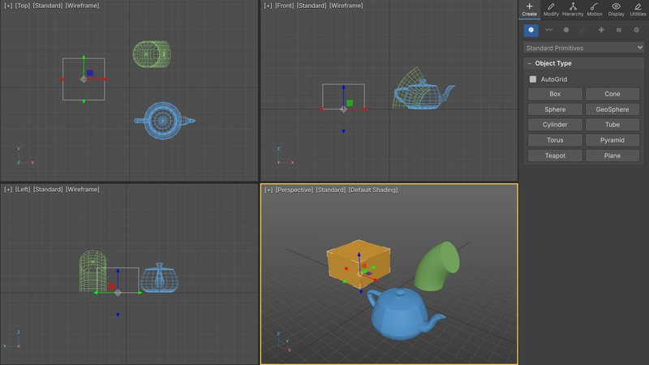

<!DOCTYPE html>
<html lang="uz"><head><meta charset="utf-8"><meta name="viewport" content="width=device-width, initial-scale=1">
<title>3D modellaştiriş texnologiyalari — 3D modellar</title>
<link rel="preconnect" href="https://fonts.googleapis.com"><link rel="preconnect" href="https://fonts.gstatic.com" crossorigin>
<link href="https://fonts.googleapis.com/css2?family=Manrope:wght@400;600;700;800&display=swap" rel="stylesheet">
<style>:root{--navy:#0c1a3a;--navy2:#13265a;--teal:#12b5a5;--amber:#f5a524;--ink:#16203a;--muted:#5b6780;--bg:#f4f6fa;--card:#fff;--line:#e3e8f0;--ok:#0f9d58;--bad:#d93025}
*{box-sizing:border-box}html,body{margin:0;background:var(--bg);color:var(--ink);font-family:Manrope,system-ui,-apple-system,"Segoe UI",Roboto,Arial,sans-serif;-webkit-text-size-adjust:100%}
a{color:inherit}h1,h2{margin:0}h2{font-size:18px;margin-bottom:10px}
.hero{background:radial-gradient(1200px 500px at 85% -10%,#1f4fb5 0%,transparent 60%),linear-gradient(160deg,var(--navy) 0%,var(--navy2) 100%);color:#fff;padding:34px 18px 30px;position:relative;overflow:hidden}
.hero:after{content:"";position:absolute;inset:0;background-image:linear-gradient(rgba(255,255,255,.06) 1px,transparent 1px),linear-gradient(90deg,rgba(255,255,255,.06) 1px,transparent 1px);background-size:28px 28px;mask-image:linear-gradient(180deg,transparent,#000 60%);pointer-events:none}
.hero-in{max-width:980px;margin:0 auto;position:relative;z-index:1}.org{font-size:12px;letter-spacing:.08em;text-transform:uppercase;opacity:.8}
.hero h1{font-size:clamp(26px,6vw,42px);line-height:1.1;margin:10px 0 8px;font-weight:800}.sub{opacity:.88;margin:0 0 16px;max-width:640px;line-height:1.5}
.chips{display:flex;flex-wrap:wrap;gap:8px}.chips span{background:rgba(255,255,255,.12);border:1px solid rgba(255,255,255,.2);padding:6px 10px;border-radius:999px;font-size:13px}
.wrap{max-width:980px;margin:0 auto;padding:18px}.wrap.narrow{max-width:760px}
.how{background:var(--card);border:1px solid var(--line);border-radius:16px;padding:16px 18px;margin:8px 0 22px}.how ol{margin:0;padding-left:20px;line-height:1.6}
.grid{display:grid;grid-template-columns:repeat(auto-fill,minmax(210px,1fr));gap:14px}
.card{background:var(--card);border:1px solid var(--line);border-radius:16px;overflow:hidden;text-decoration:none;display:flex;flex-direction:column;transition:transform .15s,box-shadow .15s}
.card:hover{transform:translateY(-2px);box-shadow:0 10px 24px rgba(16,32,80,.1)}
.thumb{aspect-ratio:4/3;background:#eef2f7}.thumb img{width:100%;height:100%;object-fit:cover;display:block}
.cbody{padding:10px 12px 14px}.cnum{font-size:12px;font-weight:800;color:var(--teal);text-transform:uppercase;letter-spacing:.06em;display:flex;align-items:center;gap:6px}
.badge{background:var(--teal);color:#fff;border-radius:999px;padding:1px 7px;font-size:11px}.ctitle{font-weight:700;line-height:1.3;margin-top:4px;font-size:15px}
footer{color:var(--muted);font-size:12px;text-align:center;padding:26px 0 30px;line-height:1.6}
.topbar{position:sticky;top:0;z-index:20;background:rgba(12,26,58,.96);color:#fff;display:flex;justify-content:space-between;align-items:center;padding:10px 14px;font-size:14px}
.back{text-decoration:none;font-weight:700}.tb-num{opacity:.8}
.labhead{background:linear-gradient(160deg,var(--navy) 0%,var(--navy2) 100%);color:#fff;display:flex;gap:14px;align-items:center;padding:16px 16px 22px}
.big{font-size:54px;font-weight:800;line-height:1;color:var(--amber);min-width:70px}.kicker{font-size:12px;letter-spacing:.08em;text-transform:uppercase;opacity:.75}
.labhead h1{font-size:clamp(18px,4.6vw,26px);line-height:1.25;margin-top:4px}
.viewer{background:linear-gradient(#e9eef6,#f6f8fb);position:relative}
.mv{position:relative;width:100%;height:min(62vh,560px);overflow:hidden}.mv canvas{display:block;touch-action:none;outline:none}
.poster{position:absolute;inset:0;width:100%;height:100%;object-fit:contain;opacity:.55;filter:blur(1px)}
.hs-layer{position:absolute;inset:0;pointer-events:none}.hs.behind{opacity:.4}
.hs{position:absolute;left:0;top:0;pointer-events:auto;width:30px;height:30px;border-radius:50%;border:3px solid #fff;background:var(--amber);color:#16203a;font-weight:800;font-size:13px;box-shadow:0 3px 10px rgba(0,0,0,.35);cursor:pointer;padding:0;display:flex;align-items:center;justify-content:center;animation:pulse 2.2s infinite}
@keyframes pulse{0%{box-shadow:0 0 0 0 rgba(245,165,36,.7)}70%{box-shadow:0 0 0 12px rgba(245,165,36,0)}100%{box-shadow:0 0 0 0 rgba(245,165,36,0)}}
.mv-progress{position:absolute;left:0;right:0;top:0;height:4px;overflow:hidden}.mv-progress div{height:100%;background:var(--teal);width:30%;animation:ld 1.2s infinite ease-in-out}@keyframes ld{0%{margin-left:-30%}100%{margin-left:100%}}
.tools{display:flex;gap:8px;justify-content:center;flex-wrap:wrap;padding:10px 12px 0}
.tools button,.btn{font:inherit;font-weight:700;border:1px solid var(--line);background:#fff;border-radius:999px;padding:9px 14px;cursor:pointer;color:var(--ink)}
.tools button.on{background:var(--navy);color:#fff;border-color:var(--navy)}.btn{background:var(--navy);color:#fff;border-color:var(--navy)}.btn.sm{padding:6px 12px;font-size:13px;margin-left:6px}
.hint{text-align:center;color:var(--muted);font-size:13px;margin:8px 12px 0;padding-bottom:14px}
.box{background:var(--card);border:1px solid var(--line);border-radius:16px;padding:16px 16px 18px;margin:0 0 14px}.goal p{line-height:1.6;margin:0}
.muted{color:var(--muted);margin-top:-4px;line-height:1.5}
.q{font-weight:700;line-height:1.45;margin:6px 0 10px}.qn{color:var(--muted);font-size:12px;margin:8px 0 0}
.opts{display:grid;gap:8px}.opts button{font:inherit;text-align:left;border:1.5px solid var(--line);background:#fafbfd;border-radius:12px;padding:11px 12px;cursor:pointer;color:var(--ink);line-height:1.35}
.opts button:hover:not(:disabled){border-color:var(--teal)}.opts button.ok{border-color:var(--ok);background:#e8f6ee}.opts button.bad{border-color:var(--bad);background:#fdecea}
.fb{margin-top:10px;border-radius:12px;padding:10px 12px;line-height:1.5}.fb.ok{background:#e8f6ee}.fb.bad{background:#fdecea}
.qprog{height:6px;background:#edf1f6;border-radius:9px;overflow:hidden}.qprog span{display:block;height:100%;background:var(--teal)}
.result{text-align:center;padding:8px}.score{font-size:42px;font-weight:800;color:var(--teal)}
.tasks{margin:0;padding-left:20px;line-height:1.6}
.pn{display:flex;justify-content:space-between;margin:18px 0 0}.pn a{font-weight:800;text-decoration:none;background:#fff;border:1px solid var(--line);border-radius:999px;padding:10px 14px}
.sheet{position:fixed;inset:0;z-index:50;background:rgba(10,18,40,.35);display:flex;align-items:flex-end;justify-content:center}
.sheet[hidden]{display:none}.sh-in{background:#fff;width:100%;max-width:640px;border-radius:20px 20px 0 0;padding:16px 16px 22px;box-shadow:0 -10px 30px rgba(0,0,0,.2);max-height:80vh;overflow:auto}
.sh-top{display:flex;align-items:center;gap:8px}.sh-top b{flex:1}.pill{background:var(--amber);border-radius:50%;width:26px;height:26px;display:inline-flex;align-items:center;justify-content:center;font-weight:800}
.x{border:0;background:#eef2f7;border-radius:50%;width:32px;height:32px;font-size:15px;cursor:pointer}
#wdg canvas{display:block;width:100%;border-radius:12px;background:#fbfcfe;border:1px solid var(--line);touch-action:none}
.ctrl{display:flex;align-items:center;gap:10px;margin-top:10px;flex-wrap:wrap}.sl{display:flex;align-items:center;gap:10px;flex:1;min-width:220px}.sl input{flex:1}.sl output{font-weight:700;min-width:70px;font-variant-numeric:tabular-nums}
.mono{font-family:ui-monospace,Menlo,Consolas,monospace;font-size:12.5px;color:var(--muted);margin:8px 0 0;word-break:break-word}
.legend{font-size:13px;color:var(--muted)}.legend i{display:inline-block;width:14px;height:4px;border-radius:2px;vertical-align:middle;margin-right:5px}
.err{color:var(--bad);text-align:center;padding:10px}

.simcard{display:grid;grid-template-columns:minmax(0,1.1fr) minmax(0,1fr);gap:0;background:#20242b;color:#e9edf3;border-radius:18px;overflow:hidden;text-decoration:none;margin:4px 0 24px;box-shadow:0 10px 30px rgba(16,32,80,.18)}
.simcard .simimg img{width:100%;height:100%;object-fit:cover;display:block}
.simcard .simtx{padding:18px 20px;display:flex;flex-direction:column;gap:8px;justify-content:center}
.simcard .simtx b{font-size:20px}.simcard .simtx p{margin:0;color:#b9c2cf;line-height:1.5}
.simcard .btn{align-self:flex-start;margin-top:4px}
.simbtn{display:block;text-align:center;background:#20242b;color:#fff;text-decoration:none;font-weight:700;padding:14px;border-radius:14px;margin:0 0 16px}
.mxload{position:fixed;inset:0;display:grid;place-items:center;background:#3b3b3b;color:#ddd;font:600 16px sans-serif}
@media(max-width:640px){.simcard{grid-template-columns:1fr}.simcard .simimg{aspect-ratio:16/9}}
/* ===== 3ds Max simulyatori ===== */
body.mxon { overflow: hidden; background: #3b3b3b; }
.mx { --bg: #3d3d3d; --pan: #444; --dark: #2a2a2a; --ln: #2c2c2c; --tx: #d9d9d9; --mut: #9b9b9b; --acc: #4f8fd8; --yel: #f2c94c;
  position: fixed; inset: 0; display: grid; grid-template-rows: 24px 36px 22px 1fr 30px 44px; background: var(--bg); color: var(--tx);
  font: 12px/1.3 "Segoe UI", Tahoma, Arial, sans-serif; user-select: none; -webkit-user-select: none; z-index: 50; }
.mx button { font: inherit; color: inherit; }
.mx input, .mx select { font: inherit; }
.mx-menu { display: flex; align-items: center; background: #353535; border-bottom: 1px solid var(--ln); overflow-x: auto; white-space: nowrap; scrollbar-width: none; }
.mx-menu button { background: none; border: 0; padding: 3px 8px; cursor: pointer; }
.mx-menu button:hover { background: #505050; }
.mx-sp { flex: 1; }
.mx-ws { color: var(--mut); padding: 0 10px; }
.mx-back { color: #fff; background: #2f6fd6; padding: 2px 10px; border-radius: 3px; text-decoration: none; margin-right: 6px; font-weight: 600; }
.mx-tool { display: flex; align-items: center; gap: 2px; padding: 0 6px; background: var(--pan); border-bottom: 1px solid var(--ln); overflow-x: auto; scrollbar-width: none; }
.mx-tool .tb { width: 30px; height: 28px; display: grid; place-items: center; background: none; border: 1px solid transparent; border-radius: 3px; cursor: pointer; flex: none; color: #cfcfcf; }
.mx-tool .tb svg { width: 19px; height: 19px; }
.mx-tool .tb:hover { background: #555; border-color: #5e5e5e; }
.mx-tool .tb.on { background: #2e5f9c; border-color: #4f8fd8; color: #fff; }
.mx-tool .tb.dis { opacity: .45; }
.mx-tool .tb[data-tb="tasks"] { width: auto; padding: 0 8px; gap: 5px; display: flex; color: #ffd76a; }
.mx-tool .sep { width: 1px; height: 22px; background: #5a5a5a; margin: 0 4px; flex: none; }
.mx-sel { background: var(--dark); border: 1px solid #555; color: var(--tx); height: 22px; border-radius: 2px; padding: 0 4px; }
.mx-sel.wide { width: 100%; margin: 6px 0; height: 24px; }
.mx-ribbon { display: flex; align-items: center; gap: 14px; padding: 0 10px; background: #393939; border-bottom: 1px solid var(--ln); color: var(--mut); font-size: 11px; overflow: hidden; white-space: nowrap; }
.mx-ribbon .on { color: #fff; border-bottom: 2px solid var(--acc); }
.mx-ribbon em { font-style: normal; margin-left: auto; color: #bbb; }
.mx-main { display: grid; grid-template-columns: 190px 1fr 252px; min-height: 0; }
.mx-exp { background: #3a3a3a; border-right: 1px solid var(--ln); display: flex; flex-direction: column; min-height: 0; }
.mx-ph { padding: 4px 8px; background: #333; border-bottom: 1px solid var(--ln); font-size: 11px; color: #bbb; }
.mx-find { margin: 6px; background: var(--dark); border: 1px solid #555; color: var(--tx); padding: 3px 6px; border-radius: 2px; }
.mx-exp-h { padding: 3px 8px; background: #333; color: var(--mut); font-size: 11px; border-block: 1px solid var(--ln); }
.mx-list { overflow: auto; flex: 1; }
.mx-list .it { display: flex; align-items: center; gap: 6px; padding: 3px 8px; cursor: pointer; white-space: nowrap; }
.mx-list .it:hover { background: #474747; }
.mx-list .it.on { background: #2e5f9c; color: #fff; }
.mx-list .it i { width: 10px; height: 10px; border-radius: 2px; flex: none; }
.mx-list .eye { color: #8fd3ff; width: 14px; text-align: center; }
.mx-list .eye.off { color: #777; }
.mx-empty { color: var(--mut); padding: 8px; }
.mx-vps { position: relative; background: #2a2a2a; min-height: 0; overflow: hidden; }
.mx-vps canvas { position: absolute; inset: 0; z-index: 1; pointer-events: none; }
.vpbg { position: absolute; background: #4d4d4d; z-index: 0; }
.vpbg.persp { background: linear-gradient(#686868, #3b3b3b); }
.vp { position: absolute; z-index: 2; border: 1px solid #262626; box-sizing: border-box; touch-action: none; }
.vp.active { border: 2px solid var(--yel); }
.vpl { position: absolute; left: 6px; top: 4px; color: #e6e6e6; font-size: 11.5px; text-shadow: 0 1px 1px #000; white-space: nowrap; z-index: 3; }
.vpl b { font-weight: 400; cursor: pointer; padding: 1px 1px; border-radius: 2px; }
.vpl b:hover { background: rgba(255, 255, 255, .15); color: #ffe27a; }
.vps { position: absolute; left: 8px; top: 24px; color: #fff; font: 11px/1.35 Consolas, monospace; text-shadow: 0 1px 1px #000; pointer-events: none; }
.mx-vtabs { display: none; }
.mx-tasks { position: absolute; right: 8px; top: 8px; z-index: 5; width: min(330px, calc(100% - 16px)); background: rgba(34, 36, 40, .96); border: 1px solid #5a5a5a; border-radius: 6px; padding: 8px 10px 10px; box-shadow: 0 8px 24px rgba(0, 0, 0, .45); max-height: calc(100% - 16px); overflow: auto; }
.mx-th { display: flex; justify-content: space-between; align-items: center; color: #ffd76a; }
.mx-th button, .mx-reset { background: none; border: 0; color: #aaa; font-size: 16px; cursor: pointer; }
.mx-tasks p { color: var(--mut); margin: 4px 0 6px; font-size: 11.5px; }
.mx-tasks ol { list-style: none; margin: 0; padding: 0; }
.mx-tasks li { display: flex; gap: 8px; padding: 5px 0; border-top: 1px solid #3a3a3a; line-height: 1.35; }
.mx-tasks li span { flex: none; width: 20px; height: 20px; border-radius: 50%; background: #555; display: grid; place-items: center; font-size: 11px; }
.mx-tasks li.ok { color: #9fe0a8; }
.mx-tasks li.ok span { background: #2e9e4f; color: #fff; }
.mx-done { color: #9fe0a8 !important; font-weight: 700; }
.mx-toast { position: absolute; left: 50%; bottom: 14px; transform: translateX(-50%); z-index: 6; background: rgba(20, 20, 20, .9); color: #fff; padding: 6px 14px; border-radius: 14px; font-size: 12.5px; }
.mx-cmd { background: #3f3f3f; border-left: 1px solid var(--ln); display: flex; flex-direction: column; min-height: 0; }
.mx-tabs { display: flex; background: #363636; border-bottom: 1px solid var(--ln); }
.mx-tabs button { flex: 1; background: none; border: 0; padding: 4px 0 2px; cursor: pointer; color: #bdbdbd; display: flex; flex-direction: column; align-items: center; gap: 1px; border-bottom: 2px solid transparent; }
.mx-tabs button svg { width: 18px; height: 18px; }
.mx-tabs button span { font-size: 9px; }
.mx-tabs button.on { color: #fff; background: #474747; border-bottom-color: var(--acc); }
.mx-cp { overflow: auto; padding: 6px 8px 20px; flex: 1; }
.cats { display: flex; justify-content: space-between; padding: 2px 2px 4px; border-bottom: 1px solid #333; }
.cats b { width: 28px; height: 24px; display: grid; place-items: center; border-radius: 3px; font-size: 13px; }
.cats b.on { background: #2e5f9c; }
.cats b.dis { opacity: .4; }
.ro { margin: 6px 0; background: #464646; border: 1px solid #353535; border-radius: 2px; }
.ro-h { padding: 4px 8px; background: #4e4e4e; cursor: pointer; font-weight: 600; color: #eee; }
.ro-h span { display: inline-block; width: 12px; color: #aaa; }
.ro-b { padding: 6px 8px; }
.ro.closed .ro-b { display: none; }
.otypes { display: grid; grid-template-columns: 1fr 1fr; gap: 4px; margin-top: 6px; }
.otypes button, .mx-cp .wide, .stackbtn button { background: #565656; border: 1px solid #2f2f2f; border-radius: 2px; padding: 4px 2px; cursor: pointer; }
.otypes button:hover, .mx-cp .wide:hover { background: #626262; }
.otypes button.on { background: #2e5f9c; border-color: #6fa6e6; color: #fff; }
.mx-cp .wide { width: 100%; margin: 3px 0; display: block; }
.mx-cp .wide.dis { opacity: .45; }
.row { display: flex; align-items: center; justify-content: space-between; gap: 6px; margin: 4px 0; }
.row > span:first-child { white-space: nowrap; }
.sp { display: inline-flex; align-items: stretch; background: var(--dark); border: 1px solid #222; border-radius: 2px; width: 104px; flex: none; }
.sp input { width: 100%; min-width: 0; background: none; border: 0; color: #f0f0f0; padding: 2px 4px; text-align: left; }
.sp input:focus { outline: 1px solid var(--acc); }
.sp b { width: 12px; font-size: 7px; display: grid; place-items: center; color: #aaa; cursor: ns-resize; background: #3a3a3a; touch-action: none; }
.sp b:hover { color: #fff; background: #4f4f4f; }
.sp.kb { width: 104px; }
.cb { display: flex; align-items: center; gap: 6px; margin: 4px 0; cursor: pointer; }
.rad { display: flex; gap: 8px; }
.rad label { display: flex; gap: 3px; align-items: center; cursor: pointer; }
.nc { display: flex; gap: 6px; margin: 6px 0; }
.nc #mxName { flex: 1; min-width: 0; background: var(--dark); border: 1px solid #222; color: #fff; padding: 3px 5px; }
.nc #mxColor { width: 30px; height: 24px; border: 1px solid #222; padding: 0; background: none; cursor: pointer; }
.stack { background: #2b2b2b; border: 1px solid #222; min-height: 70px; max-height: 150px; overflow: auto; margin-top: 2px; }
.si { padding: 4px 6px; cursor: pointer; display: flex; gap: 6px; align-items: center; }
.si.on { background: #2e5f9c; color: #fff; }
.si.base { color: #ddd; }
.si b { cursor: pointer; font-size: 11px; }
.si b.off { filter: grayscale(1) brightness(.5); }
.stackbtn { display: flex; gap: 3px; margin: 4px 0 6px; }
.stackbtn button { flex: 1; }
.stackbtn button:disabled { opacity: .35; }
.seg { display: flex; margin: 4px 0; }
.seg b { flex: 1; text-align: center; padding: 4px; background: #525252; font-weight: 400; }
.seg b.on { background: #2e5f9c; }
.seg b.dis { opacity: .45; }
.kv { display: grid; grid-template-columns: auto 1fr; gap: 4px 8px; }
.kv span { color: var(--mut); }
.mx-info, .mx-mini { color: #b4b4b4; font-size: 11.5px; line-height: 1.4; }
.mx-time { display: grid; grid-template-columns: 180px 1fr; background: #333; border-top: 1px solid var(--ln); }
.mx-slider { display: grid; place-items: center; background: #4a4a4a; margin: 4px; border-radius: 2px; color: #ddd; }
.mx-track { position: relative; margin: 4px 14px 0; border-top: 1px solid #555; }
.mx-track i { position: absolute; top: 2px; font-style: normal; font-size: 9px; color: #888; transform: translateX(-50%); }
.mx-status { display: grid; grid-template-columns: 120px 1fr auto auto auto; gap: 8px; align-items: center; padding: 0 6px; background: #3a3a3a; border-top: 1px solid var(--ln); }
.mx-ms { font: 10px Consolas, monospace; }
.mx-ms div { background: #f0c8d2; color: #333; height: 15px; padding: 0 3px; margin: 1px 0; }
.mx-ms div + div { background: #fff; }
.mx-st { min-width: 0; }
.mx-st #mxSelN { color: #eee; }
.mx-prompt { color: #c9c9c9; font-size: 11px; white-space: nowrap; overflow: hidden; text-overflow: ellipsis; }
.mx-ti { display: flex; align-items: center; gap: 6px; }
.mx-ti label { display: flex; align-items: center; gap: 3px; }
.mx-ti input { width: 62px; background: var(--dark); border: 1px solid #222; color: #fff; padding: 2px 4px; }
.mx-ti input:disabled { opacity: .4; }
.mx-lock { color: var(--mut); min-width: 18px; }
.mx-grid { color: var(--mut); white-space: nowrap; }
.mx-anim { display: flex; align-items: center; gap: 4px; }
.mx-anim button, .mx-anim select, .mx-anim input { background: #555; border: 1px solid #2c2c2c; color: #ddd; padding: 2px 6px; height: 22px; }
.mx-anim .mx-ak { background: #5a3b3b; }
.mx-play { color: #bbb; letter-spacing: 2px; }
.mx-nav { display: grid; grid-template-columns: repeat(3, 26px); gap: 2px; }
.mx-nav button { background: #4c4c4c; border: 1px solid #2c2c2c; height: 19px; font-size: 11px; cursor: pointer; padding: 0; }
.mx-nav button.on { background: #2e5f9c; }
.mx-dd { position: absolute; z-index: 80; min-width: 220px; background: #3b3b3b; border: 1px solid #5c5c5c; box-shadow: 0 6px 18px rgba(0, 0, 0, .5); padding: 3px 0; }
.mx-dd button { display: flex; justify-content: space-between; width: 100%; background: none; border: 0; text-align: left; padding: 5px 14px; cursor: pointer; white-space: pre; }
.mx-dd button:hover { background: #2e5f9c; }
.mx-dd kbd { color: #999; font: inherit; }
.mx-dd .hd { padding: 4px 10px; color: #9b9b9b; font-size: 11px; border-bottom: 1px solid #4a4a4a; }
.mx-modal { position: absolute; inset: 0; z-index: 90; background: rgba(0, 0, 0, .45); display: grid; place-items: center; }
.mx-modal[hidden] { display: none; }
.mx-dlg { background: #444; border: 1px solid #666; width: min(380px, 92vw); padding: 12px 14px; border-radius: 4px; box-shadow: 0 10px 30px rgba(0, 0, 0, .5); }
.mx-dlg h3 { margin: 0 0 8px; font-size: 13px; }
.mx-dlg fieldset { border: 1px solid #5a5a5a; margin: 0 0 8px; padding: 6px 10px; }
.mx-dlg fieldset label { display: block; margin: 4px 0; cursor: pointer; }
.mx-dlg input[type=number] { width: 70px; background: var(--dark); border: 1px solid #222; color: #fff; padding: 2px 4px; }
.mx-dlgb { display: flex; justify-content: flex-end; gap: 6px; margin-top: 10px; }
.mx-dlgb button { background: #5a5a5a; border: 1px solid #2c2c2c; padding: 4px 14px; cursor: pointer; }
.mx-dlgb [data-ok] { background: #2e5f9c; }
.mx-keys { width: 100%; border-collapse: collapse; }
.mx-keys td { padding: 3px 4px; border-top: 1px solid #555; }
.mx-keys kbd { background: #2c2c2c; padding: 1px 5px; border-radius: 3px; font: 11px Consolas, monospace; }
/* --- telefon va planshet --- */
@media (max-width: 900px), (pointer: coarse) and (max-width: 1100px) {
  .mx { grid-template-rows: 26px 40px minmax(0, 1fr) auto; font-size: 13px; }
  .mx-ribbon, .mx-time, .mx-ms, .mx-anim, .mx-ws, .mx-grid { display: none; }
  .mx-tool .tb { width: 36px; height: 34px; }
  .mx-main { grid-template-columns: 1fr; grid-template-rows: minmax(260px, 50vh) 1fr; }
  .mx-exp { display: none; position: absolute; left: 0; top: 66px; bottom: 60px; width: 230px; z-index: 30; box-shadow: 4px 0 16px rgba(0, 0, 0, .5); }
  .mx-exp.show { display: flex; }
  .mx-vps { grid-row: 1; }
  .mx-cmd { grid-row: 2; border-left: 0; border-top: 1px solid #222; min-height: 0; }
  .mx-tabs button span { font-size: 10px; }
  .mx-vtabs { display: flex; position: absolute; right: 6px; bottom: 6px; z-index: 4; gap: 3px; }
  .mx-vtabs button { background: rgba(40, 40, 40, .85); border: 1px solid #666; color: #ddd; padding: 4px 7px; border-radius: 3px; font-size: 11px; }
  .mx-vtabs button.on { background: #2e5f9c; color: #fff; }
  .mx-status { grid-template-columns: 1fr; gap: 3px; padding: 4px 6px 6px; }
  .mx-prompt { white-space: normal; font-size: 11.5px; }
  .mx-nav { display: none; }
  .mx-ti input { width: 64px; }
  .sp { width: 120px; }
  .sp b { width: 22px; font-size: 9px; }
  .otypes button { padding: 8px 2px; }
}
</style>
<script type="importmap">{"imports":{"three":"./lib/three.module.min.js"}}</script>
</head><body><div id="app"></div>
<script>window.DATA={"title": "3D modellaştiriş texnologiyalari — 3D modellar", "org": "Muhammad al-Xorazmiy nomidagi TATU · Televizion texnologiyalari fakulteti · “Televizion va media texnologiyalar” kafedrasi", "course": "3D modellaştiriş texnologiyalari", "subtitle": "Uslubiy körsatmadagi 15 ta amaliy işning 3D modellari, model ustidagi savollar va nazorat testlari. Ilova örnatiş şart emas.", "footer": "© Muhammad al-Xorazmiy nomidagi TATU, “Televizion va media texnologiyalar” kafedrasi, 2026 · Matn ÖRQ–1184-son Qonuni bilan belgilangan yangi lotin yozuvida", "t": {"ish": "Iş", "amaliy": "Amaliy iş", "all": "Barça işlar", "chip1": "QR → şu sahifa", "chip2": "Barmoq bilan aylantiring", "chip3": "Sariq nuqtalarda savol", "howTitle": "Qanday foydalaniladi", "labsTitle": "Amaliy işlar", "how": ["Uslubiy körsatmadagi iş sarlavhasi ostidagi QR-kodni telefon kamerasi bilan skanerlang.", "Oçilgan sahifada modelni bir barmoq bilan aylantiring, ikki barmoq bilan kattalaştiring.", "Model ustidagi sariq raqamli nuqtalarni bosing — har birida savol bor.", "Sahifa pastidagi 5 savollik nazorat testini işlang va natijangizni köring.", "Oddiy telefon ham yetadi: har bir model 2 MB dan kiçik, ilova örnatiş şart emas."], "rotate": "Aylantiriş", "reset": "Boşlanğiç köriniş", "points": "Savol nuqtalari", "hint": "Bir barmoq — aylantiriş, ikki barmoq — kattalaştiriş. Sariq raqamli nuqtani bosing — savol çiqadi.", "goal": "Işning maqsadi", "quiz": "Nazorat testi", "tasks": "Topşiriqlar", "right": "Töğri!", "wrong": "Notöğri.", "next": "Keyingi", "finish": "Natija", "perfect": "A’lo! Barça javoblar töğri.", "good": "Yaxşi natija. Xato qilingan savollarni uslubiy körsatmadan qayta öqing.", "again": "Mavzuni uslubiy körsatmadan qayta öqib, testni yana işlang.", "retry": "Qayta işlaş", "err": "Model yuklanmadi. Internet aloqasini tekşirib, sahifani yangilang.", "degree": "Daraja", "weight": "Burçak oğirligi", "dev": "Aylanadan eng katta çetlaniş", "exact": "aniq aylana"}, "widgets": {"bezier": {"title": "Interaktiv: de Casteljau algoritmi", "text": "P₀–P₃ nuqtalarni barmoq bilan suring va t ni özgartiring. Rangli kesmalar — algoritm bosqiçlari, pastda — Bernşteyn köphadlarining qiymati (yiğindisi doim 1 ga teng)."}, "bspline": {"title": "Interaktiv: Bezier va B-Spline", "text": "Yettita nuqtadan birini suring: Bezier egrisi (qizil) deyarli butunlay özgaradi, B-Spline (yaşil) esa faqat şu nuqta atrofida. Darajani 1 dan 5 gaça özgartirib köring."}, "nurbs": {"title": "Interaktiv: NURBS oğirligi va aniq aylana", "text": "9 ta CV li 2-darajali NURBS egri. Burçakdagi (sariq) CV larning oğirligini özgartiring: faqat w = √2/2 da egri ideal aylana böladi."}}, "max": {"title": "3ds Max simulyatori", "back": "Kurs sahifasi", "card_title": "3ds Max simulyatori", "card_text": "3ds Max interfeysi brauzerda: primitiv yarating, Parameters dagi qiymatni özgartiring — şakl şu zahoti özgaradi. Modifikatorlar, Instance nusxa, Move/Rotate/Scale va maşqlar bor.", "lab_btn": "3ds Max simulyatorida maşq qiliş", "note": "Bu — öquv simulyatori: 3ds Max ning asosiy oynalari va Standard Primitives parametrlari takrorlangan. Fayllar, render va Edit Poly 3ds Max ning özida bajariladi.", "prompt_select": "Obyektni tanlaş uçun ustiga bosing. Aylantiriş: öng tugma yoki Alt + çap tugma, suriş: örta tugma, kattalaştiriş: ğildirakça.", "prompt_select_touch": "Obyektni tanlaş uçun ustiga bosing. Bir barmoq — aylantiriş, ikki barmoq — suriş va kattalaştiriş.", "prompt_create": "{t} yaratiş: viewportda kerakli joyni bosing yoki Keyboard Entry dan foydalaning.", "prompt_move": "Move: gizmoning öqi yoki tekisligini torting. Aniq qiymat — pastdagi X, Y, Z maydonlari.", "prompt_rotate": "Rotate: gizmo halqasini torting. Aniq burçak — pastdagi X, Y, Z maydonlari (gradus).", "prompt_scale": "Scale: gizmoni torting. Aniq qiymat — pastdagi X, Y, Z maydonlari (foiz).", "none_sel": "Heç narsa tanlanmagan", "one_sel": "1 ta obyekt tanlangan", "no_sel_modify": "Avval obyektni tanlang: viewportda ustiga bosing yoki Scene Explorer dan tanlang.", "unavailable": "Bu buyruq simulyatorda yöq — 3ds Max ning özida bajariladi.", "clone_title": "Clone Options (nusxa oliş)", "clone_copy": "Copy — mustaqil nusxa", "clone_inst": "Instance — ikki tomonlama boğliq nusxa", "clone_ref": "Reference — bir tomonlama boğliq nusxa", "clone_n": "Nusxalar soni", "clone_tip": "Nusxa aynan şu joyda paydo böladi — Move (W) bilan suring.", "ok": "OK", "cancel": "Bekor qiliş", "saved": "Sahna brauzer xotirasiga saqlandi.", "loaded": "Saqlangan sahna oçildi.", "nothing_saved": "Saqlangan sahna topilmadi.", "new_scene": "Yangi sahna oçildi.", "shot": "Rasm saqlandi.", "measure_note": "Volume yopiq sirtlar uçun töğri hisoblanadi.", "tasks_title": "Maşqlar", "tasks_hint": "Har bir topşiriq bajarilganda avtomatik belgilanadi.", "tasks": ["Box yarating va nomini “Stol_Qopqoq” ga özgartiring (Name and Color).", "Stol_Qopqoq: Length = 130, Width = 240, Height = 8 cm (2-iş).", "Cylinder yarating: Radius = 5, Height = 74 cm (stol oyoği).", "Oyoqni Edit → Clone → Instance bilan nusxalang: jami 4 ta boğliq oyoq.", "Istalgan obyektni Z öqi atrofida 45° ga aylantiring (Rotate, 3-iş).", "Cylinder ga Bend qöllang: Angle = 90°, Height Segments ≥ 10."], "done": "Barça maşqlar bajarildi! A’lo.", "help_title": "Klaviatura tugmalari", "help": [["Q / W / E / R", "Select / Move / Rotate / Scale"], ["Delete", "Tanlangan obyektni öçiriş"], ["Ctrl + Z / Ctrl + Y", "Undo / Redo"], ["Ctrl + V", "Clone (nusxa oliş)"], ["Alt + W", "Faol viewportni kattalaştiriş (Maximize)"], ["Z", "Zoom Extents — hamma obyektni körsatiş"], ["F3 / F4", "Wireframe ↔ Shaded / Edged Faces"], ["G", "Grid ni yoqiş/öçiriş"], ["7", "Viewport statistikasi (Polys, Verts)"], ["S / A", "3D Snap / Angle Snap"], ["Esc", "Yaratiş rejimidan çiqiş"]], "hints": {"length": "Length — Y öqi böyiça ölçam (uzunlik).", "width": "Width — X öqi böyiça ölçam (kenglik).", "height": "Height — Z öqi böyiça ölçam (balandlik).", "lsegs": "Length Segs — uzunlik böyiça bölaklar soni. Modifikator (Bend, Twist) uçun bölaklar köp bölişi kerak.", "wsegs": "Width Segs — kenglik böyiça bölaklar soni.", "hsegs": "Height Segs — balandlik böyiça bölaklar soni. Bend va Twist silliq çiqişi uçun 10 va undan köp qiling.", "csegs": "Cap Segments — qopqoqdagi halqalar soni.", "sides": "Sides — aylana böyiça tomonlar soni: qança köp bölsa, şakl şunça silliq.", "radius": "Radius — radius.", "radius1": "Radius 1 — birinçi (asosiy) radius.", "radius2": "Radius 2 — ikkinçi radius.", "segs": "Segments — sirtni taşkil etuvçi bölaklar soni.", "smooth": "Smooth — qirralarni silliq körsatiş (smoothing).", "hemi": "Hemisphere — sferaning pastdan kesiladigan uluşi: 0,5 — yarim sfera.", "base": "Base To Pivot — tayanç nuqtani asosga köçiriş.", "rot": "Rotation — halqa kesimini öz öqi atrofida buriş.", "twist": "Twist — kesimni halqa böylab buralişi.", "depth": "Depth — Y öqi böyiça ölçam.", "gtype": "Geodesic Base Type — asos köpyoq turi.", "tsize": "Radius — çoynak ölçami.", "body": "Teapot qismlari: Body, Lid.", "angle": "Angle — egiliş (yoki buraliş) burçagi, gradusda.", "dir": "Direction — egiliş yönalişi (öq atrofida burçak).", "axis": "Axis — modifikator ta’sir qiladigan öq.", "amount": "Amount — torayiş miqdori: –1 da uçi nuqtaga aylanadi.", "curve": "Curve — yon tomonlarning qavariqligi (+) yoki botiqligi (–).", "bias": "Bias — buralişni bir uçiga töplaş.", "percent": "Percent — sferaga yaqinlaşiş foizi.", "seed": "Seed — tasodifiy son boşlanğiç qiymati.", "scale": "Scale — şovqin tölqinining kattaligi.", "sx": "Strength X — X böyiça siljiş kuçi.", "sy": "Strength Y — Y böyiça siljiş kuçi.", "sz": "Strength Z — Z böyiça siljiş kuçi.", "iter": "Iterations — silliqlaş darajasi (har biri poligonlarni 4 baravar oşiradi)."}, "vp_menu_note": "Körinişni tanlang"}, "labs": {"01": {"title": "Uç ölçovli modellaştiriş dasturi interfeysi va işçi muhiti bilan tanişiş", "goal": "talabalarni Autodesk 3ds Max dasturining interfeysi, viewportlar tizimi, Command Panel bölimlari, sahnada harakatlaniş usullari va ölçov birliklarini sozlaş bilan taniştiriş; keyingi amaliy işlar uçun töğri sozlangan işçi muhit tayyorlaş.", "tasks": ["Ölçov birliklarini santimetrga sozlang va sozlama oynasining skrinşotini oling.", "Sahnada kamida beşta turli primitiv yarating va ularni ma’noli nomlang.", "Har bir viewportni Alt + W bilan kattalaştirib, Top, Front, Left va Perspective körinişlarini skrinşot qiling.", "Viewport navigatsiya jadvalidagi har bir tezkor tugmani sinab köring.", "Loyiha papkasini yarating va sahnani saqlang."], "orbit": "-25deg 65deg auto", "widget": null, "hotspots": [{"pos": "0.0000m 0.4700m -0.0000m", "normal": "0.000m 1.000m -0.000m", "label": "Z öqi", "q": "Gizmo va koordinata öqlarida Z öqi qaysi rangda körsatiladi?", "opts": ["Qizil", "Yaşil", "Kök"], "ans": 2, "why": "Öqlar rangi standart: X — qizil, Y — yaşil, Z — kök."}, {"pos": "-0.6000m 0.4000m -0.0000m", "normal": "0.000m 0.000m 1.000m", "label": "Box001", "q": "Obyektga ma’noli nom qayerda beriladi?", "opts": ["Command Panel ning yuqori qismidagi nom maydonida", "Status Bar da", "Time Slider da"], "ans": 0, "why": "Box001 örniga Command Panel ning yuqorisidagi maydonga nom yoziladi; Scene Explorer da darhol yangilanadi."}, {"pos": "0.6000m 0.4400m -0.1000m", "normal": "0.000m 0.000m 1.000m", "label": "Viewport", "q": "Qaysi viewport perspektiva buzilişiga ega (inson köziga yaqin)?", "opts": ["Top", "Front", "Perspective"], "ans": 2, "why": "Top, Front, Left — ortografik; Perspective — kamera körinişiga yaqin."}], "quiz": [{"q": "3ds Max interfeysida sahnadagi barça obyektlar röyxati (Scene Explorer) qayerda joylaşgan?", "opts": ["Çap tomonda", "Öng tomonda", "Pastki qismda"], "ans": 0, "why": "Çapda Scene Explorer, markazda törtta viewport, öngda Command Panel joylaşgan."}, {"q": "Ortografik viewportlarning (Top, Front, Left) afzalligi nimada?", "opts": ["Ular tezroq render qiladi", "Perspektiva buzilişi yöq, ölçamlarni aniq baholaş mumkin", "Ular rangli körsatadi"], "ans": 1, "why": "Ortografik proyeksiyalarda perspektiva buzilişi yöq, şuning uçun ölçamlar aniq baholanadi."}, {"q": "Command Panel neçta tabdan iborat?", "opts": ["4 ta", "6 ta", "8 ta"], "ans": 1, "why": "Oltita tab: Create, Modify, Hierarchy, Motion, Display, Utilities. Eng köp işlatiladigani — Create va Modify."}, {"q": "Display Unit va System Unit bir xil bölmasa nima yuz beradi?", "opts": ["Heç narsa", "Viewport qorayadi", "Model boşqa dasturga (masalan, Unreal Engine ga) notöğri masştabda ötadi"], "ans": 2, "why": "Şu sababli har qanday loyiha birliklarni sozlaşdan boşlanadi: 1 Unit = 1,0 Centimeters."}, {"q": "Barça viewportlarda butun sahnani töliq körsatiş (Zoom Extents All) tugmasi qaysi?", "opts": ["Shift + Ctrl + Z", "Alt + W", "F3"], "ans": 0, "why": "Shift + Ctrl + Z — Zoom Extents All; Alt + W — viewportni kattalaştiriş/qaytariş."}]}, "02": {"title": "Primitiv geometrik obyektlarni yaratiş va tahrirlaş", "goal": "3ds Max dagi standart va kengaytirilgan primitivlar, ularning parametrlari va segmentlar bilan tanişiş; primitivlarni siçqonça va klaviatura orqali aniq ölçamda yaratiş, nusxalaş va ulardan oddiy kompozitsiya (stol va stullar) yiğiş.", "tasks": ["Standard Primitives ning barça 11 turini yarating va har biriga ma’noli nom bering.", "Keyboard Entry yordamida ölçamlari berilgan stolni yarating.", "Copy, Instance va Reference nusxalarining farqini sinab köring.", "Sphere uçun segmentlar jadvalini özingiz töldiring.", "Faqat primitivlardan stol, ikki stul va kamida uçta bezakdan iborat kompozitsiya yarating."], "orbit": "-30deg 66deg auto", "widget": null, "hotspots": [{"pos": "0.0000m 0.8200m 0.6500m", "normal": "0.000m 0.000m 1.000m", "label": "Stol qopqoği", "q": "Stol qopqoğining ölçamlari qanday?", "opts": ["Length 130, Width 240, Height 8 cm", "100 × 100 × 10 cm", "240 × 240 × 8 cm"], "ans": 0, "why": "Parameters bölimida Length = 130, Width = 240, Height = 8 cm kiritiladi."}, {"pos": "1.0500m 0.4000m 0.5000m", "normal": "0.000m 0.000m 1.000m", "label": "Oyoq (Instance)", "q": "Bitta oyoqning radiusi özgarsa, qolgan uçtasi ham özgarişi uçun qaysi nusxa turi tanlanadi?", "opts": ["Copy", "Instance", "Reference"], "ans": 1, "why": "Instance — ikki tomonlama boğliq nusxa: biridagi özgariş hammasiga ta’sir qiladi."}, {"pos": "0.0000m 1.0000m -1.3500m", "normal": "0.000m 0.000m -1.000m", "label": "Stul guruhi", "q": "Stulning barça qismlari qaysi buyruq bilan birlaştiriladi?", "opts": ["Group → Group", "Attach", "Array"], "ans": 0, "why": "Qismlar tanlanib, Group → Group buyruği bilan Stul nomli guruhga birlaştiriladi."}], "quiz": [{"q": "Primitivning parametrlilik xususiyati nimadan iborat?", "opts": ["Uni faqat bir marta yaratiş mumkin", "Yaratilgandan keyin ham ölçam va segmentlarni Modify tabida özgartiriş mumkin", "U doim Editable Poly böladi"], "ans": 1, "why": "Parametrlilik — primitivlarning asosiy afzalligi: parametrlar istalgan vaqtda özgaradi."}, {"q": "Qaysi obyekt Extended Primitives guruhiga kiradi?", "opts": ["Teapot", "Plane", "ChamferBox"], "ans": 2, "why": "Extended Primitives: Hedra, ChamferBox, ChamferCyl, Capsule, OilTank va boşqalar."}, {"q": "Sphere Segments = 32 bölganda uçburçaklar soni neçta?", "opts": ["224", "960", "3 968"], "ans": 1, "why": "Jadvalga köra: 32 segment — 482 uç, 960 uçburçak."}, {"q": "Reference nusxada boğliqlik qanday?", "opts": ["Mustaqil nusxa", "Ikki tomonlama", "Bir tomonlama: asl obyekt nusxaga ta’sir qiladi"], "ans": 2, "why": "Reference nusxaga qöşimça modifikator kerak bölganda işlatiladi."}, {"q": "Align buyruğining tezkor tugmasi qaysi?", "opts": ["Alt + A", "Alt + Q", "Shift + I"], "ans": 0, "why": "Alt + A — Align; Alt + Q — Isolate Selection; Shift + I — Spacing Tool."}]}, "03": {"title": "Obyektlarni transformatsiya qiliş: köçiriş, aylantiriş va masştablaş", "goal": "Move, Rotate va Scale transformatsiyalarini, koordinata tizimlari va transformatsiya markazlarini örganiş; transformatsiyalarni aniq qiymatlar, boğlaş (snap) va massiv (Array) yordamida bajariş könikmasini şakllantiriş.", "tasks": ["Transform Type-In orqali obyektni berilgan absolyut va nisbiy koordinatalarga suring.", "Angle Snap yordamida obyektni 15° qadam bilan aylantiring.", "Uç turdagi masştablaşni bajarib, natijalarni taqqoslang.", "Pivotni sozlab, oçiladigan eşik modelini yarating.", "Array yordamida 20 poğonali spiral zinapoya yarating."], "orbit": "-35deg 72deg auto", "widget": null, "hotspots": [{"pos": "1.3000m 0.1000m -0.0000m", "normal": "0.000m 0.000m 1.000m", "label": "1-poğona", "q": "Array oynasida Incremental Rotate Z qiymati qança?", "opts": ["10°", "18°", "36°"], "ans": 1, "why": "20 poğona × 18° = 360° — zinapoya töliq bir aylana hosil qiladi."}, {"pos": "0.0000m 3.0000m 0.1800m", "normal": "0.000m 0.000m 1.000m", "label": "Pivot", "q": "Poğona ustun atrofida aylanişi uçun pivot qayerga suriladi?", "opts": ["Poğona markaziga", "Ustun markaziga (X = 0, Y = 0)", "Dunyo tepasiga"], "ans": 1, "why": "Affect Pivot Only rejimida pivot ustun markaziga suriladi, söng Array qöllanadi."}, {"pos": "0.0000m 4.3000m -0.0000m", "normal": "0.000m 1.000m -0.000m", "label": "Balandlik", "q": "20 ta poğona Z böyiça 20 cm dan kötarilsa, oxirgi poğona qaysi balandlikda böladi?", "opts": ["380 cm", "400 cm", "430 cm"], "ans": 0, "why": "Birinçi poğona Z = 0 da, keyingi 19 tasi 20 cm dan: 19 × 20 = 380 cm."}], "quiz": [{"q": "Rotate (aylantiriş) rejimining tezkor tugmasi qaysi?", "opts": ["W", "E", "R"], "ans": 1, "why": "Q — tanlaş, W — köçiriş, E — aylantiriş, R — masştablaş."}, {"q": "Burilgan obyektni öz yönalişida suriş uçun qaysi koordinata tizimi qulay?", "opts": ["World", "Screen", "Local"], "ans": 2, "why": "Local — obyektning öz öqlari."}, {"q": "Pivot qaysi rejimda suriladi va buriladi?", "opts": ["Hierarchy → Pivot → Affect Pivot Only", "Modify → Edit Poly", "Display → Hide"], "ans": 0, "why": "Affect Pivot Only rejimida faqat pivot özgaradi, obyekt joyida qoladi."}, {"q": "Obyekt darajasida Non-uniform Scale bajarilgan bölsa, masştab qanday 100% ga qaytariladi?", "opts": ["Utilities → Reset XForm", "Ctrl + S", "Group → Ungroup"], "ans": 0, "why": "Reset XForm masştabni 100% ga qaytaradi; aks holda modifikator va eksportda muammo çiqadi."}, {"q": "Transformatsiya matritsasida qöllaniş tartibi qanday?", "opts": ["Köçiriş → buriliş → masştab", "Avval masştab, keyin buriliş, oxirida köçiriş", "Tartib ahamiyatsiz"], "ans": 1, "why": "M = T · R · S: uçga avval S, söng R, oxirida T ta’sir qiladi. Tartib natijani özgartiradi."}]}, "04": {"title": "Polygonal modellaştirişda Vertex, Edge va Face elementlari bilan işlaş", "goal": "Editable Poly obyektining sub-obyekt darajalari (Vertex, Edge, Border, Polygon, Element) va ularning asosiy tahrirlaş buyruqlarini örganiş; Box dan boşlab oddiy uy modelini polygonal usulda yaratiş.", "tasks": ["Beşta sub-obyekt darajasining har birida bitta elementni tanlab skrinşot qiling.", "Polygon darajasida Extrude, Inset va Bevel buyruqlarini alohida Box larda sinab köring.", "Edge darajasida Chamfer (Segments = 1 va 4) va Connect natijalarini taqqoslang.", "Uy modelini tom, ikki deraza va eşik bilan yarating.", "Border darajasida oçiq teşikni Cap bilan yoping."], "orbit": "-30deg 70deg auto", "widget": null, "hotspots": [{"pos": "2.7000m 2.1500m 3.3300m", "normal": "0.000m 0.000m 1.000m", "label": "Deraza", "q": "Deraza romi qaysi buyruq bilan hosil qilinadi?", "opts": ["Bevel", "Inset (By Polygon, Amount = 14 cm)", "Chamfer"], "ans": 1, "why": "Inset poligon içida kiçikroq poligon yaratadi; söng içki poligon Extrude bilan –8 cm içkariga suriladi."}, {"pos": "0.0000m 1.6000m 3.3500m", "normal": "0.000m 0.000m 1.000m", "label": "Eşik (ID 3)", "q": "Eşikka alohida material beriş uçun nima qilinadi?", "opts": ["Material ID = 3 beriladi", "Obyekt nusxalanadi", "TurboSmooth qöşiladi"], "ans": 0, "why": "Polygon: Material IDs → Set ID = 3; keyin Multi/Sub-Object materiali (13-iş) ID larga material boğlaydi."}, {"pos": "-3.0000m 6.0000m -0.0000m", "normal": "0.000m 1.000m -0.000m", "label": "Tom tizmasi", "q": "Tom tizmasi (konyok) qanday hosil qilinadi?", "opts": ["Tepadagi uçlar Y böyiça nolga yaqin Scale qilinadi", "Sphere qöşiladi", "Lathe qöllanadi"], "ans": 0, "why": "Poligonlar Extrude (Group, 110 cm) qilinadi, söng yuqori uçlar Non-uniform Scale bilan Y böyiça siqiladi va Weld qilinadi."}], "quiz": [{"q": "Polygonal tör qaysi uç asosiy elementdan taşkil topadi?", "opts": ["Vertex, Edge, Face", "Spline, Knot, Hull", "Pixel, Texel, Voxel"], "ans": 0, "why": "Vertex — uç, Edge — qirra, Face/Polygon — yuza."}, {"q": "Edit Poly modifikatorining Editable Poly ga nisbatan afzalligi nimada?", "opts": ["Tezroq render", "Modifikatorni öçirib, asl parametrlarga qaytiş mumkin", "UV avtomatik yaratiladi"], "ans": 1, "why": "Edit Poly modifikatori stekda turadi — uni öçirsangiz primitiv parametrlari qaytadi."}, {"q": "Inset buyruği nima qiladi?", "opts": ["Poligonni normal böylab çözadi", "Poligon içida kiçikroq poligon yaratadi, balandlik bermaydi", "Qirrani faskaga aylantiradi"], "ans": 1, "why": "Extrude — çözadi; Inset — içki poligon; Bevel — Extrude + Outline."}, {"q": "Qirralar halqasini (parallel qirralar töplamini) qaysi tugma tanlaydi?", "opts": ["Loop", "Ring", "Grow"], "ans": 1, "why": "Ring — parallel qirralar halqasi; Loop — uzluksiz qirralar zanjiri."}, {"q": "Border darajasida oçiq teşik qaysi buyruq bilan yopiladi?", "opts": ["Cap", "Weld", "Detach"], "ans": 0, "why": "Border (3) darajasida oçiq çegara tanlanib, Cap bilan yopiladi."}]}, "05": {"title": "Polygonal obyektlar topologiyasini yaratiş va tahrirlaş", "goal": "töğri topologiya tamoyillari (törtburçak poligonlar, halqalar, qutblar, tayanç qirralar) bilan tanişiş; Swift Loop, Cut, Remove va TurboSmooth vositalari yordamida silliqlaşga tayyor toza törli krujka modelini yaratiş va xView bilan tör xatolarini tekşiriş.", "tasks": ["Tayanç qirralarsiz va tayanç qirralar bilan Box ga TurboSmooth qöllab, natijani taqqoslang.", "16 tomonli silindrdan içi böş krujka va tutqiç yarating.", "Modeldagi barça n-gonlarni törtburçaklarga ajrating.", "xView yordamida modelni tekşiring va xatolar röyxatini tuzing.", "TurboSmooth ning 0–3 iteratsiyalarida poligonlar sonini jadvalga yozing."], "orbit": "-15deg 70deg auto", "widget": null, "hotspots": [{"pos": "0.1460m 0.0490m -0.0000m", "normal": "1.000m 0.000m -0.000m", "label": "Tutqiç", "q": "Tutqiç ikki poligon orasida qaysi buyruq bilan hosil qilinadi?", "opts": ["Bridge (Segments = 6)", "Lathe", "Shell"], "ans": 0, "why": "Ikki poligon 0,5 cm Extrude qilinib, Bridge bilan tutaştiriladi; muqobili — Extrude Along Spline."}, {"pos": "-0.0800m 0.0960m 0.0400m", "normal": "0.000m 0.000m 1.000m", "label": "Sides = 16", "q": "Nima uçun silindr Sides soni 4 ga karrali olinadi?", "opts": ["Render tezlaşadi", "Tutqiç uçun törtburçak yuzalar simmetrik joylaşadi", "UV avtomatik yoyiladi"], "ans": 1, "why": "Sides 4 ga karrali bölsa, tutqiç çiqadigan yuzalar simmetrik joylaşadi."}, {"pos": "0.0800m 0.0100m 0.0405m", "normal": "0.000m 0.000m 1.000m", "label": "TurboSmooth", "q": "Kubga TurboSmooth (Iterations = 2) qöllansa, poligonlar soni neçta böladi?", "opts": ["24", "96", "384"], "ans": 1, "why": "N = N₀ · 4ⁿ = 6 · 4² = 96."}], "quiz": [{"q": "Silliqlaş (TurboSmooth) uçun ideal poligon turi qaysi?", "opts": ["Uçburçak (tri)", "Törtburçak (quad)", "N-gon"], "ans": 1, "why": "Quad silliqlaş va halqalar uçun ideal; n-gon soyalanişni buzadi."}, {"q": "Nima uçun yakuniy modelda n-gonlar bölmasligi kerak?", "opts": ["Ular soyalaniş va silliqlaşni buzadi", "Ular köp xotira oladi", "Ular rangsiz"], "ans": 0, "why": "N-gon (beşdan ortiq tomonli) modellaştiriş jarayonida vaqtinçalik qolişi mumkin, yakuniy modelda emas."}, {"q": "E-qutbda neçta qirra tutaşadi?", "opts": ["3 ta", "4 ta", "5 ta"], "ans": 2, "why": "N-qutbda 3 ta, E-qutbda 5 ta qirra tutaşadi."}, {"q": "Tayanç qirralar (support loops) nima uçun qöşiladi?", "opts": ["Poligonlarni kamaytiriş uçun", "Silliqlaşni çeklab, qirralarni aniq saqlaş uçun", "UV ni yoyiş uçun"], "ans": 1, "why": "Halqa burçakka qança yaqin bölsa, qirra şunça ötkir çiqadi."}, {"q": "Remove (Ctrl + Backspace) va Delete farqi nimada?", "opts": ["Farqi yöq", "Remove qirrani uçlari bilan olib taşlaydi, Delete tutaş poligonlarni öçiradi", "Delete faqat uçlarni öçiradi"], "ans": 1, "why": "Oddiy Delete qirrani emas, unga tutaş poligonlarni öçiradi."}]}, "06": {"title": "Fotogrammetriya asosida oddiy 3D model yaratiş", "goal": "fotogrammetriya usulining tamoyillari bilan tanişiş, real obyektni turli burçaklardan suratga oliş, bepul Meshroom (AliceVision) dasturida 3D model rekonstruksiya qiliş va olingan modelni 3ds Max ga import qilib optimallaştiriş.", "tasks": ["Tanlangan obyektni uç halqa sxemasida kamida 40 marta suratga oling.", "Meshroom da rekonstruksiyani bajaring va har bir asosiy tugun natijasining skrinşotini oling.", "Modelni 3ds Max ga import qilib, real masştabga keltiring.", "ProOptimizer bilan uçburçaklar sonini kamida 20 baravar kamaytiring.", "Optimallaştirişdan oldingi va keyingi uçburçaklar sonini jadvalda keltiring."], "orbit": "-20deg 60deg auto", "widget": null, "hotspots": [{"pos": "0.5500m 0.1200m -0.0000m", "normal": "1.000m 0.000m -0.000m", "label": "1-halqa (24)", "q": "Qöşni kadrlar neça foiz ustma-ust tuşişi kerak?", "opts": ["10–20%", "30–40%", "60–80%"], "ans": 2, "why": "Dastur suratlarda bir xil nuqtalarni topişi uçun ustma-ustlik 60–80% bölişi kerak."}, {"pos": "0.0000m 0.2000m 0.1490m", "normal": "0.000m 0.000m 1.000m", "label": "Obyekt", "q": "Qaysi obyekt fotogrammetriya uçun MOS EMAS?", "opts": ["Naqşli sopol köza", "Toş", "Şaffof şişa idiş"], "ans": 2, "why": "Şaffof va yaltiroq sirtlarda dastur xarakterli nuqtalarni topa olmaydi."}, {"pos": "0.0000m 0.5800m -0.3800m", "normal": "0.000m 0.000m -1.000m", "label": "3-halqa (10)", "q": "Tavsiya etilgan kadrlar soni qança?", "opts": ["10–15", "40–60", "500 dan ortiq"], "ans": 1, "why": "Uç halqa: 24 + 18 + 10 = 52 kadr; tavsiya — 40–60 ta surat."}], "quiz": [{"q": "Fotogrammetriya nuqtalarning fazodagi koordinatalarini qanday hisoblaydi?", "opts": ["Triangulyatsiya yordamida", "Lazer bilan ölçab", "Tasodifiy tanlab"], "ans": 0, "why": "Dastur turli suratlarda bir xil nuqtalarni topib, triangulyatsiya bilan koordinatani hisoblaydi."}, {"q": "Fotogrammetriya uçun qaysi obyekt MOS EMAS?", "opts": ["Matli toş", "Naqşli haykalça", "Yaltiroq, bir xil rangli yoki şaffof obyekt"], "ans": 2, "why": "Bunday sirtlarda xarakterli nuqtalar topilmaydi."}, {"q": "Tavsiya etilgan diafragma qiymati qança?", "opts": ["f/1.8", "f/8 – f/11", "f/22"], "ans": 1, "why": "f/8 – f/11 da butun obyekt fokusda böladi."}, {"q": "Siyrak nuqtalar buluti (sparse cloud) Meshroom ning qaysi tugunida hosil böladi?", "opts": ["CameraInit", "StructureFromMotion", "Texturing"], "ans": 1, "why": "StructureFromMotion kamera pozitsiyalari va siyrak bulutni hisoblaydi."}, {"q": "ProOptimizer da Keep Textures nima uçun yoqiladi?", "opts": ["Tekstura (UV koordinatalar) saqlanib qolişi uçun", "Rang yorqinlaşişi uçun", "Poligonlar köpayişi uçun"], "ans": 0, "why": "Keep Textures va Keep UV Boundaries teksturali model sifatini saqlaydi."}]}, "07": {"title": "Bezier egri çiziqlari yordamida geometrik şakllarni quriş", "goal": "Bezier egri çiziqlarining matematik asoslarini örganiş, 3ds Max dasturida Line obyekti va uning uçlari (vertex) turlari bilan işlaş, tutqiçlar (handles) yordamida aniq va silliq ikki ölçovli şakllar çiziş könikmasini şakllantiriş.", "tasks": ["Initial Type va Drag Type parametrlarini özgartirib, bir xil şaklni ikki usulda çizing va farqini tuşuntiring.", "Tört xil vertex turini bitta splaynda qöllang va skrinşot oling.", "Yurak va barg şakllarini çizing; uçlar soni 7.4-rasmdagidan oşmasin.", "Fillet va Chamfer buyruqlari bilan törtburçak burçaklarini yumaloqlang.", "Steps = 0, 6 va 12 qiymatlarida şaklning körinişini taqqoslang."], "orbit": "0deg 88deg auto", "widget": "bezier", "hotspots": [{"pos": "-0.1800m 0.2600m 0.0100m", "normal": "0.000m 0.000m 1.000m", "label": "Botiq uç", "q": "Yurakning yuqori markaziy botiq uçi qaysi turda böladi?", "opts": ["Corner", "Smooth", "Bezier Corner"], "ans": 2, "why": "Bezier Corner da tutqiçlar mustaqil — silliq segmentlar orasida siniş hosil böladi."}, {"pos": "-0.0700m 0.2300m 0.0100m", "normal": "0.000m 0.000m 1.000m", "label": "Yon uç", "q": "Yon tomondagi uçlar qaysi turda?", "opts": ["Bezier", "Corner", "Bezier Corner"], "ans": 0, "why": "Bezier uçida tutqiçlar bitta çiziqda va uzunligi teng — silliq ötiş beradi."}, {"pos": "0.1800m 0.3200m 0.0100m", "normal": "0.000m 0.000m 1.000m", "label": "Barg uçi", "q": "Kubik Bezier segmenti neçta nuqta bilan beriladi?", "opts": ["2", "3", "4"], "ans": 2, "why": "Kubik (n = 3) egri 4 ta nuqta bilan beriladi: 2 ta uç va 2 ta tutqiç."}], "quiz": [{"q": "n-darajali Bezier egrisi neçta nazorat nuqtasi bilan aniqlanadi?", "opts": ["n", "n + 1", "2n"], "ans": 1, "why": "n-darajali egri n + 1 ta nazorat nuqtasi P₀ … Pₙ orqali aniqlanadi."}, {"q": "De Casteljau algoritmining mohiyati nimada?", "opts": ["Qöşni nuqtalar orasidagi kesmalarni t nisbatda takror böliş", "Tasodifiy nuqtalar tanlaş", "Egri çiziqni integrallaş"], "ans": 0, "why": "Kesmalar t nisbatda bölinadi, jarayon bitta nuqta qolgunça takrorlanadi."}, {"q": "Bezier egrisi qaysi nazorat nuqtalaridan albatta ötadi?", "opts": ["Barçasidan", "Faqat birinçi va oxirgisidan", "Heç biridan"], "ans": 1, "why": "Egri birinçi va oxirgi nuqtadan ötadi, oraliq nuqtalardan ötmaydi."}, {"q": "Bezier va Bezier Corner uçlarining farqi nimada?", "opts": ["Bezier Corner da tutqiçlar mustaqil", "Bezier da tutqiç yöq", "Farqi yöq"], "ans": 0, "why": "Bezier da tutqiçlar bitta çiziqda va teng; Bezier Corner da mustaqil — siniş hosil böladi."}, {"q": "Interpolation Steps = 0 bölsa egri qanday körinadi?", "opts": ["Juda silliq", "Siniq çiziq", "Körinmaydi"], "ans": 1, "why": "Steps = 0 da egri siniq çiziqqa aylanadi; standart qiymat 6."}]}, "08": {"title": "Spline egri çiziqlari asosida uç ölçovli obyektlar yaratiş", "goal": "ikki ölçovli splaynlardan Lathe, Extrude, Sweep, Loft modifikatorlari va renderlanadigan splayn usuli yordamida uç ölçovli obyektlar (vaza, logotip, rom, prujina) yaratişni örganiş.", "tasks": ["Lathe yordamida vaza, stakan va şamdon yarating.", "Öz ismingizning boş harflarini Bevel modifikatori bilan 3D matnga aylantiring.", "Custom Section bilan rasm romini modellaştiring.", "Helix asosida prujina va Line asosida egilgan kabel yarating.", "Loft yordamida dumaloqdan yulduzsimonga ötuvçi ustun yarating va Twist deformatsiyasini qöllang."], "orbit": "-20deg 64deg auto", "widget": null, "hotspots": [{"pos": "-1.5000m 0.3000m -0.0900m", "normal": "0.000m 0.000m 1.000m", "label": "Lathe", "q": "Lathe modifikatorida öqdagi uçlarni birlaştiruvçi parametr qaysi?", "opts": ["Flip Normals", "Weld Core", "Cap Start"], "ans": 1, "why": "Weld Core öqdagi uçlarni birlaştiradi; Align = Min öqni profil çegarasiga qöyadi."}, {"pos": "-0.6000m 0.8500m 0.0100m", "normal": "0.000m 0.000m 1.000m", "label": "Extrude", "q": "Yulduzning old va orqa yuzalari oçiq qolmasligi uçun nima yoqiladi?", "opts": ["Cap Start va Cap End", "Smooth", "Generate Mapping"], "ans": 0, "why": "Capping bölimida Cap Start va Cap End yoqilgan bölişi kerak."}, {"pos": "1.5000m 0.9000m 1.5000m", "normal": "0.000m 0.000m 1.000m", "label": "Helix", "q": "Splaynni renderda körinadigan trubkaga aylantiriş uçun nima yoqiladi?", "opts": ["Enable In Renderer / In Viewport", "Lathe", "Shell"], "ans": 0, "why": "Rendering bölimida Enable In Renderer va Enable In Viewport yoqilib, Radial Thickness beriladi."}, {"pos": "-1.4000m 1.1000m 1.4000m", "normal": "0.000m 0.000m 1.000m", "label": "Loft", "q": "Doiradan yulduzga ötuvçi ustun qanday hosil qilinadi?", "opts": ["Path = 0 da Circle, Path = 100 da Star (Get Shape)", "Ikki marta Extrude", "Boolean"], "ans": 0, "why": "Loft da Get Shape bilan Path = 0 da doira, Path = 100 da yulduz olinadi; Twist deformatsiyasi buraydi."}], "quiz": [{"q": "Lathe modifikatorida Align = Min nimani bildiradi?", "opts": ["Öq profilning çap çegarasida turadi", "Segmentlar minimal", "Normallar teskari"], "ans": 0, "why": "Align — Min: aylaniş öqi profilning çap çegarasida."}, {"q": "Extrude va Bevel modifikatorlarining farqi nimada?", "opts": ["Bevel 3 bosqiçli çöziş va faska beradi", "Extrude faqat splaynlar uçun emas", "Farqi yöq"], "ans": 0, "why": "Bevel da uçta daraja (Level 1–3) bor: faska, asosiy qalinlik, orqa faska."}, {"q": "Sweep da özingiz çizgan profil qanday işlatiladi?", "opts": ["Use Custom Section → Pick", "Lathe → Axis", "Shell → Outer Amount"], "ans": 0, "why": "Use Custom Section yoqilib, Pick tugmasi bilan profil tanlanadi."}, {"q": "Loft da ikkinçi kesim yölning oxiriga qanday qöyiladi?", "opts": ["Path Parameters → Path = 100, söng Get Shape", "Get Path ni ikki marta bosiş", "Attach"], "ans": 0, "why": "Path = 100 kiritilib, Get Shape bilan ikkinçi kesim (Star) tanlanadi."}, {"q": "Splaynning Interpolation → Steps qiymati oşsa, 3D obyekt poligonlari...", "opts": ["kamayadi", "özgarmaydi", "ortadi"], "ans": 2, "why": "Steps oşsa silliqlik va poligonlar soni ortadi."}]}, "09": {"title": "B-Spline egri çiziqlari va sirtlarini modellaştiriş", "goal": "B-Spline egri çiziqlari va sirtlarining nazariy asoslarini (bazis funksiyalar, tugunlar vektori, daraja, mahalliy boşqaruv) örganiş va 3ds Max dasturida CV Curve hamda CV Surface obyektlari yordamida silliq egri çiziqlar va sirtlar yaratiş.", "tasks": ["8 ta CV li CV Curve yarating va bitta CV ni suriş natijasini skrinşot qiling.", "Soft Selection bilan va usiz CV surişni taqqoslang.", "6 × 6 CV li sirt yaratib, tepalik va çuqurlikli landşaft modellaştiring.", "Surface Approximation ning uçta usulida sirt körinişini taqqoslang.", "Sferani NURBS ga aylantirib, organik obyekt yarating."], "orbit": "-25deg 58deg auto", "widget": "bspline", "hotspots": [{"pos": "-0.1000m 0.6300m 0.1000m", "normal": "0.000m 1.000m -0.000m", "label": "CV (2,2)", "q": "B-Spline da bitta CV surilganda nima özgaradi?", "opts": ["Butun sirt", "Faqat şu CV atrofidagi qism", "Heç narsa"], "ans": 1, "why": "Mahalliy boşqaruv: kubik bazis funksiya faqat p + 1 = 4 ta tugun oraliğida noldan farqli."}, {"pos": "0.0000m 0.3400m 0.7500m", "normal": "0.000m 0.000m 1.000m", "label": "Daraja", "q": "3ds Max da CV Curve standart holatda neçançi darajali?", "opts": ["1", "2", "3 (kubik)"], "ans": 2, "why": "CV Curve kubik (3-darajali) egri sifatida quriladi; u CV lardan ötmaydi, ularga “tortiladi”."}, {"pos": "0.5000m 0.3000m -0.5000m", "normal": "0.000m 1.000m -0.000m", "label": "Tugunlar", "q": "3ds Max CV egri çiziqlari qanday tugunlar vektoridan foydalanadi?", "opts": ["Tekis (uniform)", "Oçiq tekis (clamped)", "Tasodifiy"], "ans": 1, "why": "Oçiq tekis vektorda tugunlar boşida va oxirida p + 1 marta takrorlanadi, egri çetki CV lardan ötadi."}], "quiz": [{"q": "B-Spline ning Bezier egrisidan asosiy afzalligi nima?", "opts": ["Mahalliy boşqaruv", "Doim aylana çizadi", "Daraja doim nazorat nuqtalari soniga teng"], "ans": 0, "why": "Har bir nazorat nuqtasi egrining faqat çeklangan qismiga ta’sir qiladi."}, {"q": "Oçiq tekis (clamped) tugunlar vektorining xususiyati nima?", "opts": ["Tugunlar boşida va oxirida p + 1 marta takrorlanadi", "Barça tugunlar nol", "Tugunlar tasodifiy"], "ans": 0, "why": "Şu sababli egri birinçi va oxirgi nazorat nuqtasidan ötadi."}, {"q": "Kubik (p = 3) B-Spline tugunlarda qanday uzluksiz?", "opts": ["C⁰", "C¹", "C²"], "ans": 2, "why": "Daraja p bölganda egri tugunlarda C⁽ᵖ⁻¹⁾ uzluksiz: p = 3 da C²."}, {"q": "B-Spline sirti qanday quriladi?", "opts": ["u va v yönalişdagi bazis funksiyalar köpaytmasi sifatida", "Ikkita Bezier egrini qöşib", "Faqat bir yönalişda"], "ans": 0, "why": "S(u,v) = ΣΣ Nᵢ,ₚ(u) Nⱼ,q(v) Pᵢⱼ."}, {"q": "3ds Max da Surface Approximation nima uçun kerak?", "opts": ["NURBS sirtini poligonlarga böliş (tessellation) aniqligini boşqariş uçun", "Material beriş uçun", "Animatsiya uçun"], "ans": 0, "why": "Viewport va renderer uçun alohida usul tanlanadi: Regular, Parametric, Spatial, Curvature."}]}, "10": {"title": "NURBS texnologiyasi asosida murakkab obyektlarni yaratiş", "goal": "NURBS egri çiziq va sirtlarining matematik asosini, oğirliklar (weights) rolini örganiş hamda 3ds Max ning NURBS Creation Toolbox vositalari yordamida murakkab silliq obyektlar — qadah va kompyuter siçqonçasi korpusini modellaştiriş.", "tasks": ["Uç nuqtali NURBS egrida örta CV oğirligini 0,3; 1; 2; 5 qiymatlarda özgartirib, natijani taqqoslang.", "CV Curve va Point Curve bilan bir xil şaklni çizing.", "Lathe sirti yordamida qadah yarating; profilni özgartirib, boğliqlikni tekşiring.", "U Loft yordamida siçqonça korpusini modellaştiring va pastini Cap bilan yoping.", "Modelni Editable Poly ga aylantiring va poligonlar sonini yozib oling."], "orbit": "-20deg 64deg auto", "widget": "nurbs", "hotspots": [{"pos": "0.1400m 0.3200m -0.4000m", "normal": "0.000m 0.000m -1.000m", "label": "w = √2/2", "q": "Burçak CV laridagi oğirlik qança bölsa, 2-darajali NURBS ideal aylana beradi?", "opts": ["1", "√2/2 ≈ 0,707", "2"], "ans": 1, "why": "9 ta CV va burçakdagi oğirliklari √2/2 bölgan 2-darajali egri aniq aylana hosil qiladi."}, {"pos": "-0.2500m 0.2450m -0.0000m", "normal": "0.000m 1.000m -0.000m", "label": "Qadah", "q": "Profil CV lari surilganda Lathe sirti avtomatik yangilanadi. Bu nima deyiladi?", "opts": ["Boğliqlik (dependency)", "Collapse", "Instance"], "ans": 0, "why": "NURBS Creation Toolbox asboblari boğliqlikka ega: sirt profil egrisiga boğlangan."}, {"pos": "0.2381m 0.1085m 0.1741m", "normal": "0.000m 1.000m -0.000m", "label": "Oğirlik", "q": "CV oğirligi (Weight) 1 dan 2 ga oşirilsa, sirt şu joyda...", "opts": ["tekislanadi", "keskinroq egiladi (CV ga yaqinlaşadi)", "yöqoladi"], "ans": 1, "why": "Oğirlik oşsa egri/sirt şu nuqtaga yaqinlaşadi, kamaysa uzoqlaşadi."}], "quiz": [{"q": "NURBS qisqartmasi qanday oçiladi?", "opts": ["Non-Uniform Rational B-Spline", "New Uniform Rendering B-Surface", "Normal Uniform Rational Bezier Spline"], "ans": 0, "why": "Notekis ratsional B-Spline — B-Spline ning oğirliklar bilan umumlaşmasi."}, {"q": "Barça oğirliklar 1 ga teng bölsa NURBS egrisi nima böladi?", "opts": ["Oddiy B-Spline", "Aylana", "Töğri çiziq"], "ans": 0, "why": "Maxraj 1 ga aylanadi va NURBS oddiy B-Spline bölib qoladi."}, {"q": "NURBS aylanani aniq ifodalay olişining sababi nima?", "opts": ["Ratsional köriniş (oğirliklar) tufayli", "Köp nuqta işlatilgani uçun", "Faqat 3ds Max da şunday"], "ans": 0, "why": "Ratsional köriniş konik kesimlarni (aylana, ellips, parabola) aniq beradi."}, {"q": "U Loft sirti nima asosida quriladi?", "opts": ["Bir neçta kesim egri orqali", "U va V yönalişdagi egri töri orqali", "Bitta profil egri aylantirilib"], "ans": 0, "why": "U Loft — kesimlar orqali; UV Loft — U va V egri töri; Lathe — bitta profil."}, {"q": "NURBS ni Editable Poly ga aylantirişdan oldin nima sozlanadi?", "opts": ["Surface Approximation da Parametric usuli va U/V Steps", "Material ID", "Time Slider"], "ans": 0, "why": "Aylantirilgandan keyin NURBS boğliqliklari yöqoladi, şuning uçun ziçlik oldin sozlanadi."}]}, "11": {"title": "Avatarning boş va qöl qismlarini modellaştiriş", "goal": "virtual muhit avatari uçun boşni va qölni polygonal usulda, Box Modeling va Symmetry tamoyillari asosida modellaştiriş; yuz proporsiyalari va animatsiyaga mos topologiyani amalda qöllaş.", "tasks": ["Referens tasvirlarni Front va Left viewportlarga joylaştiring.", "Box va Symmetry yordamida boşning past poligonli şaklini yarating.", "Köz va oğiz atrofida kamida ikkita konsentrik halqa hosil qiling.", "Beş barmoqli qöl modelini yarating.", "Boş va qölning silliqlaşdan oldingi va keyingi poligonlar sonini jadvalda keltiring."], "orbit": "-8deg 80deg auto", "widget": null, "hotspots": [{"pos": "0.2000m 0.3900m 0.1150m", "normal": "0.000m 0.000m 1.000m", "label": "Burun", "q": "Yuz uç teng qismga bölinadi. Burun asosi qayerda?", "opts": ["Soç çiziği va qoş orasida", "Qoş va iyak örtasida (2-çegara)", "Iyakda"], "ans": 1, "why": "Soç çiziği — qoş, qoş — burun asosi, burun asosi — iyak: uç teng qism."}, {"pos": "0.2330m 0.4160m 0.0940m", "normal": "0.000m 0.000m 1.000m", "label": "Köz", "q": "Közlar boşning balandligi böyiça qayerda joylaşadi?", "opts": ["Yuqori uçdan birida", "Taxminan örtasida", "Pastki çoragida"], "ans": 1, "why": "Közlar boşning balandligi böyiça örtasida joylaşadi."}, {"pos": "0.5200m 0.4100m 0.0200m", "normal": "0.000m 0.000m 1.000m", "label": "Barmoq böğimlari", "q": "Böğimlarga qöşimça halqalar nima uçun qöşiladi?", "opts": ["Rang beriş uçun", "Barmoq bukilganda şaklni saqlaş uçun", "Poligonlarni kamaytiriş uçun"], "ans": 1, "why": "Swift Loop bilan qöşilgan halqalar barmoq bukilganda törning töğri deformatsiyasini ta’minlaydi."}, {"pos": "-0.4500m 0.5300m 0.1100m", "normal": "0.000m 0.000m 1.000m", "label": "Box cage", "q": "VR avatarining boşi uçun tavsiya etilgan hajm qança?", "opts": ["3–6 ming uçburçak", "300 ming uçburçak", "50 uçburçak"], "ans": 0, "why": "Jadvalga köra boş uçun VR tavsiyasi 3–6 ming uçburçak."}], "quiz": [{"q": "Yuz kengligi taxminan neçta köz kengligiga teng?", "opts": ["3 ta", "5 ta", "7 ta"], "ans": 1, "why": "Yuz kengligi taxminan beşta köz kengligiga teng."}, {"q": "Köz va oğiz atrofidagi konsentrik halqalar nima uçun kerak?", "opts": ["Köz qisiş va gapirişda tör töğri çözilişi uçun", "Rang beriş uçun", "Poligonlarni kamaytiriş uçun"], "ans": 0, "why": "Halqalar muşaklar yönalişiga mos joylaştiriladi."}, {"q": "Symmetry modifikatorining afzalligi nimada?", "opts": ["Işni ikki baravar qisqartiradi va topologiyani bir xil saqlaydi", "Teksturani yaratadi", "Render tezlaşadi"], "ans": 0, "why": "Faqat yarmi modellaştiriladi, ikkinçi yarmi avtomatik hosil böladi."}, {"q": "Referens Plane lar tasodifan tanlanmasligi uçun nima qilinadi?", "opts": ["Freeze Selection", "Delete", "Hide Unselected"], "ans": 0, "why": "Freeze Selection; Show Frozen in Gray öçirilsa surat kulrang körinmaydi."}, {"q": "Mobil VR şlemlar uçun butun avatar neçta uçburçakdan oşmasligi tavsiya etiladi?", "opts": ["1–2 ming", "10–20 ming", "1 million"], "ans": 1, "why": "Şuning uçun boş past poligonli cage körinişida quriladi."}]}, "12": {"title": "UV Mapping va teksturalaş jarayonlarini bajariş", "goal": "UV koordinatalar tuşunçasi, proyeksiya turlari va yoyiş (unwrap) usullarini örganiş; 3ds Max da UVW Map va Unwrap UVW modifikatorlari yordamida obyektlarni teksturalaş va PBR tekstura xaritalarini qöllaş.", "tasks": ["Checker tekstura yordamida uçta primitivning UV sifatini tekşiring.", "Törtta proyeksiya turini bitta obyektda taqqoslang va xulosa yozing.", "Avatar boşini tikuvlar, Peel, Relax va Pack yordamida yoying.", "UV şablonini render qilib, oddiy teri teksturasini çizing.", "Devor va qutiga PBR teksturalarni qöllab render qiling."], "orbit": "-20deg 68deg auto", "widget": null, "hotspots": [{"pos": "0.1000m 0.2200m -0.3800m", "normal": "0.000m 0.000m 1.000m", "label": "Sfera", "q": "UV qiymatlari odatda qaysi oraliqda yotadi?", "opts": ["0 dan 1 gaça", "0 dan 4096 gaça", "–1 dan 1 gaça"], "ans": 0, "why": "UV koordinatalar 0–1 kvadrat içida va tekstura ölçamidan qat’i nazar bir xil işlaydi."}, {"pos": "-1.1000m 0.2000m -0.4000m", "normal": "0.000m 0.000m 1.000m", "label": "Checker", "q": "Checker katakçalari çözilgan va turli ölçamda körinsa, bu nimani bildiradi?", "opts": ["UV ni tuzatiş kerak", "Render tayyor", "Normal map yöq"], "ans": 0, "why": "Kataklar kvadrat va bir xil bölsa UV töğri; çözilsa — tuzatiş kerak."}, {"pos": "0.3000m 0.7000m 0.8100m", "normal": "0.000m 0.000m 1.000m", "label": "Normal map", "q": "Normal xarita qaysi rang fazosida yuklanadi?", "opts": ["sRGB", "Linear (Override Gamma = 1,0)", "CMYK"], "ans": 1, "why": "Roughness, Metalness, Normal — ma’lumot xaritalari, ular Linear yuklanadi."}, {"pos": "1.4000m 0.3000m -0.1500m", "normal": "0.000m 0.000m 1.000m", "label": "Koşin", "q": "Bu kafel uçun qaysi UVW Map proyeksiyasi mos?", "opts": ["Spherical", "Box", "Cylindrical"], "ans": 1, "why": "Olti tomonli quti, ğişt, mebel uçun Box proyeksiyasi mos keladi."}], "quiz": [{"q": "UV koordinatalarda nima uçun U va V harflari işlatiladi?", "opts": ["XYZ fazo öqlaridan farqlaş uçun", "Tasodifan", "Ultra Violet sözidan"], "ans": 0, "why": "U — gorizontal, V — vertikal öq; XYZ dan farqlaş uçun boşqa harflar olingan."}, {"q": "UVW Map va Unwrap UVW farqi nimada?", "opts": ["UVW Map tayyor proyeksiya beradi; Unwrap UVW da tikuvlar belgilanib yoyiladi", "Farqi yöq", "Unwrap UVW faqat sfera uçun"], "ans": 0, "why": "Murakkab obyektlar uçun Unwrap UVW: Peel, Relax, Pack."}, {"q": "Boşning UV tikuvlari qayerga joylaştiriladi?", "opts": ["Yuzning old tomoniga", "Boşning orqasiga, quloq ortidan böyingaça — kamroq körinadigan joyga", "Burun ustiga"], "ans": 1, "why": "Tikuv kam körinadigan joyda bölişi kerak."}, {"q": "Qaysi xarita sRGB rang fazosida yuklanadi?", "opts": ["Base Color (Albedo)", "Roughness", "Normal"], "ans": 0, "why": "Base Color — sRGB; Roughness, Metalness, Normal — Linear."}, {"q": "VR uçun tavsiya etilgan tekstura ziçligi (texel density) qança?", "opts": ["1 metrga 32 piksel", "1 metrga 512–1024 piksel", "1 metrga 100 000 piksel"], "ans": 1, "why": "Bir sahnadagi obyektlarda ziçlik bir xil bölişi kerak."}]}, "13": {"title": "Materiallar va shaderlarni yaratiş hamda obyektlarga qöllaş", "goal": "fizikaga asoslangan (PBR) materiallarning işlaş tamoyillarini örganiş; 3ds Max ning Slate Material Editor muharririda Physical Material va Arnold Standard Surface materiallarini yaratiş, tekstura xaritalarini ulaş, bir obyektga bir neçta material beriş va material kutubxonasini yuritiş.", "tasks": ["Roughness – Metalness jadvalini (10 ta sfera) yarating va render qiling.", "Oltita asosiy material turini yarating va bir sahnada taqqoslang.", "Ğişt devor uçun Bitmap va Normal Bump tugunlarini töğri ulang.", "Uy modeliga Multi/Sub-Object material bering.", "Barça materiallarni şaxsiy kutubxonaga saqlang."], "orbit": "-10deg 60deg auto", "widget": null, "hotspots": [{"pos": "-1.0000m 0.1100m -0.4900m", "normal": "0.000m 0.000m 1.000m", "label": "Roughness = 0", "q": "Roughness = 0 bölganda sirt qanday körinadi?", "opts": ["Közgu kabi aniq aks ettiradi", "Butunlay xira", "Şaffof"], "ans": 0, "why": "0 da sirt közgu kabi aks ettiradi, 1 da yoruğlik soçilib xira körinadi."}, {"pos": "1.0000m 0.1100m -0.1400m", "normal": "0.000m 0.000m 1.000m", "label": "Metalness = 1", "q": "Metallarda aks rangi nimaga teng?", "opts": ["Doim oq", "Sirt (Base) rangiga", "Qora"], "ans": 1, "why": "Metallarda aks rangi sirt rangiga teng; dielektriklarda aks oq va kuçsiz."}, {"pos": "-1.2500m 0.1400m 0.5900m", "normal": "0.000m 0.000m 1.000m", "label": "Şişa", "q": "Şişa uçun IOR qiymati qança?", "opts": ["1,0", "1,33", "1,5"], "ans": 2, "why": "Sindiriş körsatkiçi: şişa 1,5, suv 1,33."}, {"pos": "-0.2500m 0.2000m 0.5900m", "normal": "0.000m 0.000m 1.000m", "label": "Yoğoç", "q": "Yoğoç sirtiga mayda notekislik qaysi slot orqali beriladi?", "opts": ["Emission", "Bump Map (Noise xaritasi)", "Transparency"], "ans": 1, "why": "Jadvalga köra yoğoç uçun Bump Map ga Noise xaritasi ulanadi."}], "quiz": [{"q": "PBR yondaşuvining mohiyati nimada?", "opts": ["Materiallar real fizik kattaliklar bilan beriladi va istalgan yoritişda töğri körinadi", "Faqat rang beriladi", "Faqat renderni tezlaştiradi"], "ans": 0, "why": "Physically Based Rendering — fizikaga asoslangan render."}, {"q": "Metalness = 0 bölgan sirt qanday ataladi?", "opts": ["Metall", "Dielektrik", "Şaffof"], "ans": 1, "why": "Metalness: metall (1) yoki dielektrik (0)."}, {"q": "Slate Material Editor rejimining xususiyati nima?", "opts": ["Tugunlar (node) grafigi körinişida işlaydi", "Faqat 6 ta şarça", "Materiallarni öçiradi"], "ans": 0, "why": "Slate da material va xaritalar bloklar körinişida sim bilan ulanadi."}, {"q": "Normal xarita materialga qanday ulanadi?", "opts": ["Töğridan-töğri Base Color ga", "Normal Bump tuguni orqali Bump Map kirişiga", "Emission ga"], "ans": 1, "why": "Normal Bitmap → Normal Bump (Normal kirişi) → materialning Bump Map kirişi."}, {"q": "Multi/Sub-Object materiali qanday işlaydi?", "opts": ["Material ID raqamlari böyiça har bir ID ga alohida material boğlaydi", "Barça poligonlarga bitta rang beradi", "Faqat render uçun"], "ans": 0, "why": "Masalan, uy: 1 — devor, 2 — oyna, 3 — eşik."}]}, "14": {"title": "Sahnani yoritiş va renderlaş parametrlarini sozlaş", "goal": "3ds Max dagi yoruğlik manbalari turlarini, uç nuqtali yoritiş sxemasini va Arnold render tizimining asosiy parametrlarini örganiş; fizik kamera örnatiş, şovqin va render vaqti örtasidagi muvozanatni topiş hamda yakuniy tasvirni saqlaş.", "tasks": ["Fizik kamera örnatib, portret kompozitsiyasini tuzing.", "Uç nuqtali yoritişni bosqiçma-bosqiç yarating va har bir bosqiçni render qiling.", "Skydome va HDRI yordamida taşqi muhit yoritişini sozlang.", "AA Samples = 2, 4, 6 va denoiser bilan render qilib, vaqt va sifatni jadvalda taqqoslang.", "Yakuniy tasvirni 1920 × 1080 ölçamda PNG va EXR formatlarida saqlang."], "orbit": "-22deg 74deg auto", "widget": null, "hotspots": [{"pos": "-0.9500m 2.0500m 1.1200m", "normal": "0.000m 0.000m 1.000m", "label": "Key Light", "q": "Asosiy şakl va soyani qaysi yoruğlik beradi?", "opts": ["Key Light", "Fill Light", "Back (Rim) Light"], "ans": 0, "why": "Key — asosiy şakl va soya; Fill — soyalarni yumşatadi; Back — siluetni fondan ajratadi."}, {"pos": "1.2000m 1.7000m 0.9700m", "normal": "0.000m 0.000m 1.000m", "label": "Fill 6500 K", "q": "6500 K yoruğlik qanday?", "opts": ["Iliq lampoçka", "Neytral kunduzgi yoruğlik", "Sovuq osmon"], "ans": 1, "why": "2700 K — iliq lampoçka, 5500–6500 K — kunduzgi, 8000 K dan yuqori — sovuq osmon."}, {"pos": "0.5500m 2.2200m -0.9500m", "normal": "0.000m 0.000m -1.000m", "label": "Back Light", "q": "Back (Rim) Light ning vazifasi nima?", "opts": ["Soyalarni yumşatiş", "Obyekt siluetini fondan ajratiş", "Fonni yoritiş"], "ans": 1, "why": "Back Light obyekt ortida, yuqorida turadi va siluetni ajratadi."}, {"pos": "0.0000m 1.3500m 2.3700m", "normal": "0.000m 0.000m 1.000m", "label": "Kamera", "q": "Portret uçun tavsiya etilgan Focal Length qança?", "opts": ["18 mm", "35 mm", "85 mm"], "ans": 2, "why": "Physical Camera: Focal Length = 85 mm (portret uçun)."}], "quiz": [{"q": "Arnold render tizimi qaysi usulda işlaydi?", "opts": ["Nurlarni kuzatiş (ray tracing)", "Scanline", "Vektor grafika"], "ans": 0, "why": "Kameradan har bir piksel orqali nurlar çiqariladi va yoruğlik manbalarigaça kuzatiladi."}, {"q": "Uç nuqtali yoritişda Fill Light ning vazifasi nima?", "opts": ["Asosiy soyani beradi", "Soyalarni yumşatadi", "Siluetni ajratadi"], "ans": 1, "why": "Key — şakl va soya, Fill — soyalarni yumşatiş, Back — siluet."}, {"q": "2700 K harorat qanday yoruğlikka mos?", "opts": ["Iliq lampoçka", "Kunduzgi yoruğlik", "Sovuq osmon"], "ans": 0, "why": "2700 K — iliq lampoçka, 5500–6500 K — kunduzgi, 8000 K dan yuqori — sovuq osmon."}, {"q": "Camera (AA) Samples = 3 bölsa, piksel uçun neçta nur yuboriladi?", "opts": ["3", "6", "9"], "ans": 2, "why": "Nurlar soni AA qiymatining kvadratiga teng: 3² = 9."}, {"q": "Denoiser (OptiX yoki OIDN) nima qiladi?", "opts": ["Kam namunali tasvirni sun’iy intellekt yordamida tozalaydi", "Yoruğlikni öçiradi", "Tasvirni kattalaştiradi"], "ans": 0, "why": "Kam namuna + denoiser köpinça eng yaxşi muvozanatni beradi."}]}, "15": {"title": "Virtual muhitlar uçun 3D modelni optimallaştiriş va eksport qiliş", "goal": "real vaqt va VR tizimlarining samaradorlik talablarini örganiş; 3ds Max da modelni poligonlar, materiallar va teksturalar böyiça optimallaştiriş, LOD darajalarini yaratiş, sahnani tayyorlaş va FBX formatida Unreal Engine uçun eksport qiliş.", "tasks": ["Modelning optimallaştirişdan oldingi va keyingi uçburçaklar, materiallar va teksturalar sonini jadvalda keltiring.", "Reset XForm, pivot va birliklarni tekşirib, sahnani eksportga tayyorlang.", "ProOptimizer yordamida törtta LOD darajasini yarating va töğri nomlang.", "UCX_ prefiksli kolliziya obyektini yarating.", "Modelni FBX formatida eksport qilib, Unreal Engine ga import qiling va LOD larni tekşiring."], "orbit": "-4deg 80deg auto", "widget": null, "hotspots": [{"pos": "-0.9000m 0.5000m 0.1200m", "normal": "0.000m 0.000m 1.000m", "label": "LOD0: 3056 uçburçak", "q": "Kameraga eng yaqin obyekt uçun qaysi LOD körsatiladi?", "opts": ["LOD0 (töliq model)", "LOD3", "Kolliziya"], "ans": 0, "why": "LOD0 — töliq model (3056 uçburçak)."}, {"pos": "-0.3000m 0.5000m 0.1200m", "normal": "0.000m 0.000m 1.000m", "label": "LOD1: 1528 uçburçak", "q": "LOD1 da Vertex % qança olinadi?", "opts": ["100%", "50%", "6%"], "ans": 1, "why": "ProOptimizer: LOD1 — 50% (bu modelda 1528 uçburçak)."}, {"pos": "0.3000m 0.5000m 0.1200m", "normal": "0.000m 0.000m 1.000m", "label": "LOD2: 610 uçburçak", "q": "LOD2 da Vertex % qança olinadi?", "opts": ["50%", "20%", "6%"], "ans": 1, "why": "LOD2 — 20% (bu modelda 610 uçburçak)."}, {"pos": "0.9000m 0.5000m 0.1200m", "normal": "0.000m 0.000m 1.000m", "label": "LOD3: 182 uçburçak", "q": "Uzoqdagi obyekt uçun nima uçun LOD3 yetarli?", "opts": ["U ekranda bir neça önlab piksel egallaydi", "U yorqinroq", "Unda UV yöq"], "ans": 0, "why": "Uzoqdagi obyekt kiçik körinadi, farq sezilmaydi (LOD3: 182 uçburçak)."}, {"pos": "-0.9000m 0.5200m 0.1500m", "normal": "0.000m 0.000m 1.000m", "label": "UCX_SM_Head", "q": "Unreal Engine kolliziya obyektini qanday taniydi?", "opts": ["UCX_ prefiksi böyiça", "Rangi böyiça", "Hajmi böyiça"], "ans": 0, "why": "UCX_ prefiksli obyekt avtomatik kolliziya sifatida qabul qilinadi."}], "quiz": [{"q": "90 Hz çastotada bitta kadr uçun qança vaqt ajratiladi?", "opts": ["≈ 1,1 ms", "≈ 11,1 ms", "≈ 90 ms"], "ans": 1, "why": "1000 / 90 ≈ 11,1 ms."}, {"q": "Draw call nima?", "opts": ["Har bir obyekt × material kombinatsiyasi uçun protsessordan videokartaga boradigan alohida buyruq", "Tekstura ölçami", "Kamera turi"], "ans": 0, "why": "Bir xil materialdagi detallarni Attach bilan birlaştirib draw call kamaytiriladi."}, {"q": "LOD texnologiyasi qanday işlaydi?", "opts": ["Kameraga yaqin obyekt uçun LOD0, uzoqlaşgan sari soddaroq nusxa körsatiladi", "Barça obyekt bir xil körsatiladi", "Faqat teksturani özgartiradi"], "ans": 0, "why": "Uzoqdagi obyekt bir neça önlab piksel egallagani uçun farq sezilmaydi."}, {"q": "LOD nusxalari bitta FBX orqali Unreal Engine ga ötişi uçun 3ds Max da nima qilinadi?", "opts": ["Faqat _LOD0, _LOD1 deb nomlaş yetarli", "Meshlar Group qilinib, Utilities → Level of Detail bilan LOD Set yaratiladi", "Har birini alohida rangga böyaş"], "ans": 1, "why": "Unreal Engine hujjatlariga köra 3ds Max da LOD lar guruh va Level of Detail utilitasi orqali LOD Set qilinadi."}, {"q": "LOD lar eksport bölişi uçun FBX Export oynasida qaysi bölim yoqilgan bölişi kerak?", "opts": ["Cameras", "Lights", "Animation"], "ans": 2, "why": "Unreal Engine hujjatiga köra LOD lar eksport bölişi uçun FBX eksportda Animation yoqilişi talab etiladi."}]}}};</script>
<script type="module">/* 3D Modellaştiriş — QR ko'ruvchi. Ma'lumot: window.DATA (index.html ichida) */
import { createViewer } from './viewer.js';
{
  let VIEWER = null, MAXV = null;
  const D = window.DATA, $ = (s, r = document) => r.querySelector(s);
  const app = $('#app');
  let store = {};
  try { store = JSON.parse(localStorage.getItem('mdl3d') || '{}'); } catch (e) { store = {}; }
  const save = () => { try { localStorage.setItem('mdl3d', JSON.stringify(store)); } catch (e) {} };
  const esc = s => String(s).replace(/[&<>"]/g, c => ({ '&': '&amp;', '<': '&lt;', '>': '&gt;', '"': '&quot;' }[c]));
  const pad = n => String(n).padStart(2, '0');

  function route() {
    const h = (location.hash || '').replace('#', '');
    const m = h.match(/^ish-(\d{2})$/);
    if (VIEWER) { try { VIEWER.dispose(); } catch (e) {} VIEWER = null; }
    if (MAXV) { try { MAXV.dispose(); } catch (e) {} MAXV = null; }
    document.body.classList.toggle('mxon', h === 'max');
    if (h === 'max') return maxPage();
    if (m && D.labs[m[1]]) lab(m[1]); else hub();
    window.scrollTo(0, 0);
  }
  window.addEventListener('hashchange', route);

  function hub() {
    document.title = D.title;
    const cards = Object.keys(D.labs).map(k => {
      const L = D.labs[k], done = store['q' + k];
      return `<a class="card" href="#ish-${k}"><div class="thumb"></div>
      <div class="cbody"><div class="cnum">${D.t.ish} ${+k}${done !== undefined ? `<span class="badge">${done}/5</span>` : ''}</div><div class="ctitle">${esc(L.title)}</div></div></a>`;
    }).join('');
    app.innerHTML = `
    <header class="hero"><div class="hero-in">
      <div class="org">${esc(D.org)}</div>
      <h1>${esc(D.course)}</h1>
      <p class="sub">${esc(D.subtitle)}</p>
      <div class="chips"><span>📱 ${esc(D.t.chip1)}</span><span>🧊 ${esc(D.t.chip2)}</span><span>❓ ${esc(D.t.chip3)}</span></div>
    </div></header>
    <main class="wrap">
      <section class="how"><h2>${esc(D.t.howTitle)}</h2><ol>${D.t.how.map(x => `<li>${esc(x)}</li>`).join('')}</ol></section>
      <a class="simcard" href="#max"><div class="simimg"></div><div class="simtx"><b>🧩 ${esc(D.max.card_title)}</b><p>${esc(D.max.card_text)}</p><span class="btn">${esc(D.max.lab_btn)} →</span></div></a>
      <section><h2>${esc(D.t.labsTitle)}</h2><div class="grid">${cards}</div></section>
      <footer>${esc(D.footer)}</footer>
    </main>`;
  }

  function maxPage() {
    document.title = D.max.title + ' — ' + D.course;
    app.innerHTML = '<div class="mxload">3ds Max…</div>';
    import('./max.js').then(M => { if ((location.hash || '') !== '#max') return; MAXV = M.createMax(app, D.max); })
      .catch(() => { app.innerHTML = `<p class="err">${esc(D.t.err)}</p>`; });
  }

  function lab(k) {
    const L = D.labs[k]; document.title = `${D.t.ish} ${+k} — ${L.title}`;
    const n = +k, prev = n > 1 ? pad(n - 1) : null, next = n < 15 ? pad(n + 1) : null;
    app.innerHTML = `
    <div class="topbar"><a href="#" class="back">← ${esc(D.t.all)}</a><span class="tb-num">${D.t.ish} ${n}</span></div>
    <section class="labhead"><div class="big">${pad(n)}</div><div><div class="kicker">${D.t.amaliy}</div><h1>${esc(L.title)}</h1></div></section>
    <section class="viewer">
      <div id="mv" class="mv"><div class="mv-progress"><div></div></div></div>
      <div class="tools">
        <button id="rot">⟳ ${esc(D.t.rotate)}</button><button id="reset">⌂ ${esc(D.t.reset)}</button><button id="hide">◉ ${esc(D.t.points)}</button>
      </div>
      <p class="hint">${esc(D.t.hint)}</p>
    </section>
    <div id="sheet" class="sheet" hidden></div>
    <main class="wrap narrow">
      <section class="box goal"><h2>${esc(D.t.goal)}</h2><p>${esc(L.goal)}</p></section>
      ${n <= 3 ? `<a class="simbtn" href="#max">🧩 ${esc(D.max.lab_btn)} →</a>` : ''}
      ${L.widget ? `<section class="box"><h2>${esc(D.widgets[L.widget].title)}</h2><p class="muted">${esc(D.widgets[L.widget].text)}</p><div id="wdg"></div></section>` : ''}
      <section class="box"><h2>${esc(D.t.quiz)}</h2><div id="quiz"></div></section>
      <section class="box"><h2>${esc(D.t.tasks)}</h2><ol class="tasks">${L.tasks.map(t => `<li>${esc(t)}</li>`).join('')}</ol></section>
      <nav class="pn">${prev ? `<a href="#ish-${prev}">← ${D.t.ish} ${+prev}</a>` : '<span></span>'}${next ? `<a href="#ish-${next}">${D.t.ish} ${+next} →</a>` : '<span></span>'}</nav>
      <footer>${esc(D.footer)}</footer>
    </main>`;
    const host = $('#mv'), sheet = $('#sheet');
    const fail = () => { host.querySelector('.mv-progress') && host.querySelector('.mv-progress').remove(); host.insertAdjacentHTML('afterend', `<p class="err">${esc(D.t.err)}</p>`); };
    try { VIEWER = createViewer(host, { onHotspot: i => openQ(L.hotspots[i], i) }); } catch (e) { fail(); }
    if (VIEWER) {
      VIEWER.setHotspots(L.hotspots);
      loadGLB(k).then(ab => VIEWER.load(ab, L.orbit)).then(() => { host.querySelector('.poster').remove(); host.querySelector('.mv-progress').remove(); host.classList.add('ready'); }).catch(fail);
    }
    $('#rot').onclick = e => { const on = !e.currentTarget.classList.contains('on'); e.currentTarget.classList.toggle('on', on); VIEWER && VIEWER.setAutoRotate(on); };
    $('#reset').onclick = () => { VIEWER && VIEWER.reset(); };
    $('#hide').onclick = e => { if (!VIEWER) return; const v = VIEWER.toggleHotspots(); e.currentTarget.classList.toggle('on', v); };
    $('#hide').classList.add('on');
    function openQ(h, i) {
      sheet.hidden = false;
      sheet.innerHTML = `<div class="sh-in"><div class="sh-top"><span class="pill">${i + 1}</span><b>${esc(h.label)}</b><button class="x" aria-label="yopish">✕</button></div>
        <p class="q">${esc(h.q)}</p><div class="opts">${h.opts.map((o, j) => `<button data-j="${j}">${esc(o)}</button>`).join('')}</div><div class="fb" hidden></div></div>`;
      sheet.querySelector('.x').onclick = () => { sheet.hidden = true; };
      sheet.querySelectorAll('.opts button').forEach(btn => btn.onclick = () => {
        const j = +btn.dataset.j, ok = j === h.ans;
        sheet.querySelectorAll('.opts button').forEach((b2, jj) => { b2.disabled = true; if (jj === h.ans) b2.classList.add('ok'); });
        if (!ok) btn.classList.add('bad');
        const fb = sheet.querySelector('.fb'); fb.hidden = false; fb.className = 'fb ' + (ok ? 'ok' : 'bad');
        fb.innerHTML = `<b>${ok ? D.t.right : D.t.wrong}</b> ${esc(h.why)}`;
      });
    }
    quiz(k, L.quiz);
    if (L.widget) WIDGETS[L.widget]($('#wdg'));
  }

  const glbCache = {};
  function loadGLB(k) {
    if (glbCache[k]) return Promise.resolve(glbCache[k].buffer.slice(0));
    return new Promise((res, rej) => {
      const done = () => { try { const bin = atob(window.__glb[k]), n = bin.length, u8 = new Uint8Array(n);
          for (let i = 0; i < n; i++) u8[i] = bin.charCodeAt(i);
          delete window.__glb[k]; glbCache[k] = u8; res(u8.buffer.slice(0)); } catch (e) { rej(e); } };
      if (window.__glb && window.__glb[k]) return done();
      const s = document.createElement('script'); s.src = 'models/ish' + k + '.js'; s.onload = done; s.onerror = rej; document.head.appendChild(s);
    });
  }

  function quiz(k, Q) {
    const box = $('#quiz'); let i = 0, score = 0;
    function show() {
      if (i >= Q.length) {
        store['q' + k] = score; save();
        box.innerHTML = `<div class="result"><div class="score">${score} / ${Q.length}</div><p>${score === Q.length ? D.t.perfect : score >= 3 ? D.t.good : D.t.again}</p><button class="btn" id="again">${D.t.retry}</button></div>`;
        $('#again').onclick = () => { i = 0; score = 0; show(); }; return;
      }
      const q = Q[i];
      box.innerHTML = `<div class="qprog"><span style="width:${i / Q.length * 100}%"></span></div><p class="qn">${i + 1} / ${Q.length}</p><p class="q">${esc(q.q)}</p>
        <div class="opts">${q.opts.map((o, j) => `<button data-j="${j}">${esc(o)}</button>`).join('')}</div><div class="fb" hidden></div>`;
      box.querySelectorAll('.opts button').forEach(btn => btn.onclick = () => {
        const j = +btn.dataset.j, ok = j === q.ans; if (ok) score++;
        box.querySelectorAll('.opts button').forEach((b2, jj) => { b2.disabled = true; if (jj === q.ans) b2.classList.add('ok'); });
        if (!ok) btn.classList.add('bad');
        const fb = box.querySelector('.fb'); fb.hidden = false; fb.className = 'fb ' + (ok ? 'ok' : 'bad');
        fb.innerHTML = `<b>${ok ? D.t.right : D.t.wrong}</b> ${esc(q.why)} <button class="btn sm" id="nx">${i + 1 < Q.length ? D.t.next : D.t.finish} →</button>`;
        $('#nx').onclick = () => { i++; show(); };
      });
    }
    show();
  }

  /* ---------------- interaktiv vidjetlar ---------------- */
  function canvasBox(el, h) {
    const c = document.createElement('canvas'); el.appendChild(c);
    const ctx = c.getContext('2d');
    function fit() { const w = el.clientWidth, r = window.devicePixelRatio || 1; c.width = w * r; c.height = h * r; c.style.width = w + 'px'; c.style.height = h + 'px'; ctx.setTransform(r, 0, 0, r, 0, 0); }
    fit(); return { c, ctx, fit, W: () => el.clientWidth, H: h };
  }
  function draggable(cv, pts, redraw, toPx, toW) {
    let drag = -1;
    const pos = e => { const r = cv.c.getBoundingClientRect(); const t = e.touches ? e.touches[0] : e; return [t.clientX - r.left, t.clientY - r.top]; };
    const down = e => { const [x, y] = pos(e); let best = -1, bd = 28; pts.forEach((p, i) => { const [px, py] = toPx(p); const d = Math.hypot(px - x, py - y); if (d < bd) { bd = d; best = i; } }); if (best >= 0) { drag = best; e.preventDefault(); } };
    const move = e => { if (drag < 0) return; e.preventDefault(); const [x, y] = pos(e); pts[drag] = toW([x, y]); redraw(); };
    const up = () => { drag = -1; };
    cv.c.addEventListener('mousedown', down); cv.c.addEventListener('touchstart', down, { passive: false });
    window.addEventListener('mousemove', move); window.addEventListener('touchmove', move, { passive: false });
    window.addEventListener('mouseup', up); window.addEventListener('touchend', up);
  }
  const COL = { poly: '#9aa5b5', curve: '#e5484d', pt: '#1f6feb', aux: ['#f59e0b', '#10b981', '#8b5cf6'], bs: '#0ea5a4' };
  function slider(el, label, min, max, step, val, fmt) {
    const w = document.createElement('label'); w.className = 'sl';
    w.innerHTML = `<span>${label}</span><input type="range" min="${min}" max="${max}" step="${step}" value="${val}"><output>${fmt(val)}</output>`;
    el.appendChild(w); const inp = w.querySelector('input'), out = w.querySelector('output');
    return { inp, set: v => out.textContent = fmt(v) };
  }
  const WIDGETS = {
    bezier(el) {
      const cv = canvasBox(el, 300); const P = [[0.08, 0.85], [0.25, 0.12], [0.75, 0.12], [0.92, 0.85]];
      const ctrl = document.createElement('div'); ctrl.className = 'ctrl'; el.appendChild(ctrl);
      const s = slider(ctrl, 't', 0, 1, 0.01, 0.4, v => (+v).toFixed(2));
      const info = document.createElement('p'); info.className = 'mono'; el.appendChild(info);
      const toPx = p => [p[0] * cv.W(), p[1] * cv.H], toW = q => [Math.min(1, Math.max(0, q[0] / cv.W())), Math.min(1, Math.max(0, q[1] / cv.H))];
      const lerp = (a, b, t) => [a[0] + (b[0] - a[0]) * t, a[1] + (b[1] - a[1]) * t];
      function draw() {
        const t = +s.inp.value, c = cv.ctx; c.clearRect(0, 0, cv.W(), cv.H);
        c.lineWidth = 1.5; c.strokeStyle = COL.poly; c.setLineDash([5, 4]); c.beginPath(); P.forEach((p, i) => { const q = toPx(p); i ? c.lineTo(...q) : c.moveTo(...q); }); c.stroke(); c.setLineDash([]);
        c.strokeStyle = COL.curve; c.lineWidth = 3; c.beginPath();
        for (let k = 0; k <= 100; k++) { const u = k / 100; let L = P.map(p => p.slice()); while (L.length > 1) L = L.slice(1).map((p, i) => lerp(L[i], p, u)); const q = toPx(L[0]); k ? c.lineTo(...q) : c.moveTo(...q); }
        c.stroke();
        let L = P.map(p => p.slice()), lvl = 0;
        while (L.length > 1) { L = L.slice(1).map((p, i) => lerp(L[i], p, t)); c.strokeStyle = COL.aux[lvl % 3]; c.fillStyle = COL.aux[lvl % 3]; c.lineWidth = 2;
          if (L.length > 1) { c.beginPath(); L.forEach((p, i) => { const q = toPx(p); i ? c.lineTo(...q) : c.moveTo(...q); }); c.stroke(); }
          L.forEach(p => { const q = toPx(p); c.beginPath(); c.arc(q[0], q[1], L.length === 1 ? 7 : 4, 0, 7); c.fill(); }); lvl++; }
        P.forEach((p, i) => { const q = toPx(p); c.fillStyle = '#fff'; c.strokeStyle = COL.pt; c.lineWidth = 2.5; c.beginPath(); c.arc(q[0], q[1], 9, 0, 7); c.fill(); c.stroke(); c.fillStyle = COL.pt; c.font = '600 12px Manrope, sans-serif'; c.fillText('P' + i, q[0] + 11, q[1] - 10); });
        const b = [(1 - t) ** 3, 3 * (1 - t) ** 2 * t, 3 * (1 - t) * t * t, t ** 3];
        info.textContent = `B₀,₃=${b[0].toFixed(3)}  B₁,₃=${b[1].toFixed(3)}  B₂,₃=${b[2].toFixed(3)}  B₃,₃=${b[3].toFixed(3)}  Σ=${(b[0] + b[1] + b[2] + b[3]).toFixed(3)}`;
        s.set(t);
      }
      s.inp.oninput = draw; draggable(cv, P, draw, toPx, toW); window.addEventListener('resize', () => { cv.fit(); draw(); }); draw();
    },
    bspline(el) {
      const cv = canvasBox(el, 300); const P = [[0.05, 0.8], [0.18, 0.2], [0.33, 0.75], [0.5, 0.2], [0.65, 0.78], [0.8, 0.25], [0.95, 0.7]];
      const ctrl = document.createElement('div'); ctrl.className = 'ctrl'; el.appendChild(ctrl);
      const s = slider(ctrl, D.t.degree, 1, 5, 1, 3, v => 'p = ' + v);
      const leg = document.createElement('p'); leg.className = 'legend'; leg.innerHTML = `<i style="background:${COL.curve}"></i>Bezier (n = 6) &nbsp; <i style="background:${COL.bs}"></i>B-Spline`; el.appendChild(leg);
      const toPx = p => [p[0] * cv.W(), p[1] * cv.H], toW = q => [Math.min(1, Math.max(0, q[0] / cv.W())), Math.min(1, Math.max(0, q[1] / cv.H))];
      const N = (i, p, u, U) => { if (p === 0) return (U[i] <= u && u < U[i + 1]) ? 1 : 0; let a = 0, b = 0; if (U[i + p] !== U[i]) a = (u - U[i]) / (U[i + p] - U[i]) * N(i, p - 1, u, U); if (U[i + p + 1] !== U[i + 1]) b = (U[i + p + 1] - u) / (U[i + p + 1] - U[i + 1]) * N(i + 1, p - 1, u, U); return a + b; };
      const knots = (n, p) => { const U = []; for (let i = 0; i <= p; i++) U.push(0); const inner = n - p - 1; for (let i = 1; i <= inner; i++) U.push(i / (inner + 1)); for (let i = 0; i <= p; i++) U.push(1); return U; };
      const binom = (n, k) => { let r = 1; for (let i = 1; i <= k; i++) r = r * (n - k + i) / i; return r; };
      function draw() {
        const p = +s.inp.value, c = cv.ctx; c.clearRect(0, 0, cv.W(), cv.H);
        c.lineWidth = 1.5; c.strokeStyle = COL.poly; c.setLineDash([5, 4]); c.beginPath(); P.forEach((q, i) => { const r = toPx(q); i ? c.lineTo(...r) : c.moveTo(...r); }); c.stroke(); c.setLineDash([]);
        const n = P.length - 1; c.strokeStyle = COL.curve; c.lineWidth = 2.5; c.beginPath();
        for (let k = 0; k <= 160; k++) { const t = k / 160; let x = 0, y = 0; for (let i = 0; i <= n; i++) { const b = binom(n, i) * t ** i * (1 - t) ** (n - i); x += b * P[i][0]; y += b * P[i][1]; } const r = toPx([x, y]); k ? c.lineTo(...r) : c.moveTo(...r); } c.stroke();
        const U = knots(P.length, p); c.strokeStyle = COL.bs; c.lineWidth = 3.5; c.beginPath();
        for (let k = 0; k <= 200; k++) { const u = Math.min(k / 200, 1 - 1e-9); let x = 0, y = 0; for (let i = 0; i < P.length; i++) { const b = N(i, p, u, U); x += b * P[i][0]; y += b * P[i][1]; } const r = toPx([x, y]); k ? c.lineTo(...r) : c.moveTo(...r); } c.stroke();
        P.forEach((q, i) => { const r = toPx(q); c.fillStyle = '#fff'; c.strokeStyle = COL.pt; c.lineWidth = 2.5; c.beginPath(); c.arc(r[0], r[1], 9, 0, 7); c.fill(); c.stroke(); c.fillStyle = COL.pt; c.font = '600 12px Manrope, sans-serif'; c.fillText('P' + i, r[0] + 11, r[1] - 10); });
        s.set(p);
      }
      s.inp.oninput = draw; draggable(cv, P, draw, toPx, toW); window.addEventListener('resize', () => { cv.fit(); draw(); }); draw();
    },
    nurbs(el) {
      const cv = canvasBox(el, 320);
      const ctrl = document.createElement('div'); ctrl.className = 'ctrl'; el.appendChild(ctrl);
      const s = slider(ctrl, D.t.weight, 0.1, 3, 'any', Math.SQRT1_2, v => 'w = ' + (+v).toFixed(3));
      const b = document.createElement('button'); b.className = 'btn sm'; b.textContent = '√2/2'; ctrl.appendChild(b);
      const info = document.createElement('p'); info.className = 'mono'; el.appendChild(info);
      const C = [[1, 0], [1, 1], [0, 1], [-1, 1], [-1, 0], [-1, -1], [0, -1], [1, -1], [1, 0]], U = [0, 0, 0, .25, .25, .5, .5, .75, .75, 1, 1, 1];
      const N = (i, p, u) => { if (p === 0) return (U[i] <= u && u < U[i + 1]) ? 1 : 0; let a = 0, bb = 0; if (U[i + p] !== U[i]) a = (u - U[i]) / (U[i + p] - U[i]) * N(i, p - 1, u); if (U[i + p + 1] !== U[i + 1]) bb = (U[i + p + 1] - u) / (U[i + p + 1] - U[i + 1]) * N(i + 1, p - 1, u); return a + bb; };
      function draw() {
        const w = +s.inp.value, W = C.map((_, i) => i % 2 ? w : 1), c = cv.ctx, cx = cv.W() / 2, cy = cv.H / 2, R = Math.min(cv.W(), cv.H) * 0.33;
        const px = q => [cx + q[0] * R, cy - q[1] * R]; c.clearRect(0, 0, cv.W(), cv.H);
        c.strokeStyle = '#d0d7e2'; c.lineWidth = 1; c.beginPath(); c.arc(cx, cy, R, 0, 7); c.stroke();
        c.strokeStyle = COL.poly; c.setLineDash([5, 4]); c.beginPath(); C.forEach((q, i) => { const r = px(q); i ? c.lineTo(...r) : c.moveTo(...r); }); c.stroke(); c.setLineDash([]);
        c.strokeStyle = COL.curve; c.lineWidth = 3.5; c.beginPath(); let dmax = 0;
        for (let k = 0; k <= 400; k++) { const u = Math.min(k / 400, 1 - 1e-9); let x = 0, y = 0, d = 0; for (let i = 0; i < 9; i++) { const nb = N(i, 2, u) * W[i]; x += nb * C[i][0]; y += nb * C[i][1]; d += nb; } x /= d; y /= d; dmax = Math.max(dmax, Math.abs(Math.hypot(x, y) - 1)); const r = px([x, y]); k ? c.lineTo(...r) : c.moveTo(...r); } c.stroke();
        C.slice(0, 8).forEach((q, i) => { const r = px(q); c.fillStyle = i % 2 ? '#f59e0b' : '#fff'; c.strokeStyle = COL.pt; c.lineWidth = 2; c.beginPath(); c.arc(r[0], r[1], i % 2 ? 7 : 6, 0, 7); c.fill(); c.stroke(); });
        info.textContent = `${D.t.dev}: ${(dmax * 100).toFixed(3)}%  ${dmax < 1e-6 ? '✓ ' + D.t.exact : ''}`; s.set(w);
      }
      s.inp.oninput = draw; b.onclick = () => { s.inp.value = Math.SQRT1_2; draw(); }; window.addEventListener('resize', () => { cv.fit(); draw(); }); draw();
    }
  };
  route();
}
</script>
</body></html>